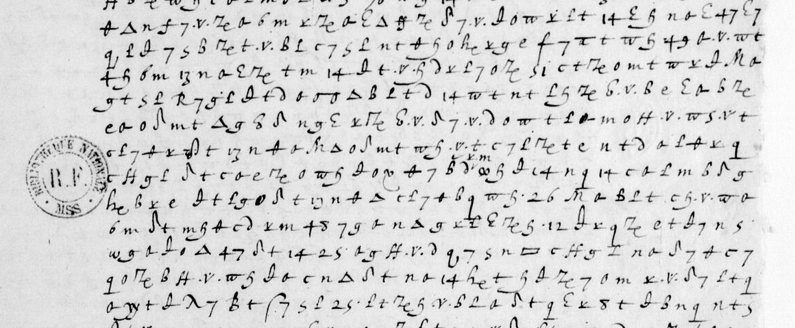
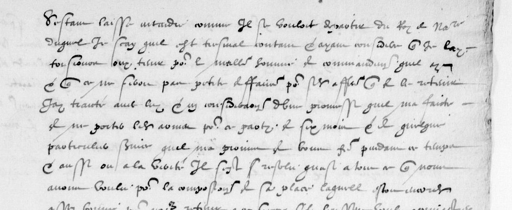

At a glanceKnown key applied · partial, 10,616 of 16,677 cipher tokens in runs of French (63.7%)
- The letters
- Eight despatches of the Duke of Mayenne’s campaign in Guyenne, December 1585 to spring 1586: Mayenne and Pierre Forget de Fresnes writing to Henri III and to the secretary of state Villeroy. Fifteen ciphered pages in all.
- Where
- Bibliothèque nationale de France, fr. 15572 ff. 110, 123–124, 143, 150, 154, 173, 196, 201 and fr. 15571 f. 177, on Gallica. Catalogue item 12 here; Satoshi Tomokiyo knew of no contemporary decipherment for them.
- The cipher
- Mayenne–Forget’s Cipher-1: several figures and invented signs for each letter, and numbers for common words and names (12 il, 14 que, 49 comme, 76 le roi de Navarre). Some figures look so alike that a reader can only narrow them to two or three letters.
- How it was deciphered
- Tomokiyo’s table, checked here on two letters deciphered at the time in the same volume. Michael Brackx re-transcribed every leaf and fitted a key to each. Here the eleven keys were merged into one, which decodes every leaf as well as its own key did.
- What it says
- The captain of Castets bought away from the King of Navarre for twelve thousand écus, an army two musters in arrears, lenders who will not lend, and a siege with fifteen cannon.
- Still open
- A third of the tokens do not yet decode into French, ten code numbers have no value, and no second reader has checked the transcription against the images.
- Credit
- The transcriptions, the per-leaf keys and most code values are Michael Brackx’s (issues 64–83, October 2026, with Claude Code). He also found the clear copies on ff. 155–157. The key tables are Tomokiyo’s.
01 The despatches
In 1585–86 Charles de Lorraine, Duke of Mayenne, led a royal army against the Protestants in Guyenne, with Marshal Matignon at Bordeaux and Pierre Forget de Fresnes in his camp. Their despatches to the King and to Villeroy are bound in BnF fr. 15572 and fr. 15571. Tomokiyo (cryptiana, Henry III’s Cipher with Ambassadors) sorts their ciphers into three. This entry holds the one he calls Mayenne–Forget’s Cipher-1. Cipher-2 and Matignon’s Cipher-3 are different ciphers, each with its own page.
| Leaf | Gallica canvas | Tokens | In runs of French | Clear copy |
|---|---|---|---|---|
| fr. 15571 f. 177r–v, Forget, 31 Dec 1585 | 185 right (btv1b90618802) | 1,164 | 702 (60.3%) | none |
| f. 110, Mayenne to Villeroy, Bellebourg, March 1586 | 116 right | 2,164 | 1,342 (62.0%) | none |
| ff. 123r–124v, Mayenne to the King, Marmande, March 1586 | 129 right – 131 left | 5,075 | 3,042 (59.9%) | none |
| f. 143r–v, Mayenne to the King, April 1586 | 150 right, 151 left | 1,916 | 1,380 (72.0%) | f. 155r–v |
| ff. 149v–150v, Forget to Villeroy, April 1586 | 157 right, 158 left | 1,573 | 1,064 (67.6%) | ff. 155v–156r |
| f. 154r–v, Forget to Villeroy, after Easter 1586 | 161 right, 162 left | 1,766 | 1,124 (63.6%) | f. 157r |
| f. 173, to the King, 1586 | 180 right | 1,072 | 581 (54.2%) | none |
| ff. 196 and 201, to the King, 1586 (one despatch, enciphered twice) | 203 right, 208 right | 1,947 | 1,381 (70.9%) | each other |
| All | 16,677 | 10,616 (63.7%) |

02 One key
Tomokiyo publishes partial tables for Cipher-1. The project checked and completed them in September 2026 against two letters in the same volume deciphered at the time: the postscript of f. 14v, written out in clear on f. 15r, and the long despatch of f. 18, deciphered on f. 19. The figures do not separate cleanly. Three shapes of “6” stand for i, n and s, and on the scans their correlation is above 0.9. So the key is kept as letter sets, not single letters, and a program scores the possible letters with a model of period French and keeps the likeliest.
In October 2026 Michael Brackx re-transcribed every Cipher-1 leaf from full-size line crops. He used a label set that keeps apart figures the earlier transcriptions had merged, and he fitted a key to each leaf. His eleven keys differ in a few letter sets, mainly whether θ is m or m/s and how e and ε divide. Here they were merged by union: each figure keeps every letter any leaf gives it. The merged key decodes every leaf at least as well as the leaf’s own key (9,855 against 9,609 tokens in runs of French). Agreement with the clear copies does not move by more than a point. The differences were in the reading of the hands, not in the cipher. Trimming rarely used letters from the merged key lowered the score, so it was not done.
Code values come from the crib leaves, the clear copies and context: 12 il, 13 qui, 14 que, 15 quoy, 17 car, 24 mais, 25 nous, 26 vous, 27 nostre, 33 vostre, 34 ainsi, 35 parce que, 36 toutesfois, 40 bien, 43 point, 46 rien, 47 tous/tout, 49 comme, 51 pas, 52 plustost, 53 affin, 54 aussi, 61 beaucoup, 62 peut, 73 the syllable oi, 76 and 78 le roi de Navarre, 82 le gouverneur de Coul[…], 84 le vicomte de Turenne, 88 Monsieur du Mayne, 104 mil. 44 is a stop. 59 is argent, added here: on f. 154r the cipher has “nous prester icy de l’[59] à rendre à Paris” where the clear copy f. 157r has “de l’argent”, and the word fits its four other places.
03 What they say
Castets, April 1586 (f. 143). The clear half of f. 143r reports on Marmande, Sainte-Bazeille and the capitulation of Castets. The cipher half explains a private bargain with the captain of Castets. The clear copy on f. 155r opens:
s’estant laissé entendre comme il se vouloit départir du Roy de Navarre, duquel je sçay qu’il est tres mal contant
Mayenne judged him the best soldier on Navarre’s side and treated with him: twelve thousand écus over three months, leave to sell his property, a pardon to be registered by the Parlement, and a promise not to bear arms for his party for six months.

Forget to Villeroy (ff. 149v–150, 154). Forget, writing in cipher under Mayenne’s clear letters, reviews the Castets bargain (“if there was a fault in the substance, there was more in the form”). He complains that the two commanders listen too readily to their own people. After Easter he reports the pay crisis: two musters owed, the captains’ complaints, and lenders who had promised money to be repaid in Paris backing away. Villeroy’s advice to raise money on exchange is answered on f. 154v. Clear copies of all three exist (ff. 155v–157r).
Money and credit (ff. 110, 123–124, 173). The longest pages have no copy and decode less fully, but their subject is plain. On f. 110 Mayenne writes to Villeroy from Bellebourg about making war without money and what it does to his reputation. The Marmande despatch of ff. 123–124 says that contributions can be raised only by garrisons, the troops cannot be kept, Turenne is back over the Garonne, and the bearer is sent to learn the King’s intention. On f. 173 the town will not contribute on the strength of the King’s letters and no one will stand surety. Only merchants of Paris will lend on the writer’s word.
A siege (ff. 196 and 201). One despatch survives twice, enciphered with different homophones: 57% of the figures are identical when the two are aligned. It names Sainct-Chamarand, la Barge, Montberault and la Binault, and tells of Mayenne’s fever, Marshal Matignon being pressed to come, two trenches and a battery of fifteen cannon. f. 201 leaves one phrase in clear inside the cipher: Le regard dud. siege il s’advance fort.
Pons and Taillebourg (fr. 15571 f. 177). Forget, 31 December 1585, on a plan against Pons and Taillebourg: the toll on the Charente at Taillebourg and thirty thousand écus from the country. The plan was given up when the vicomte de Turenne (code 84) took the field with guns.
04 How it was checked
- The measure. A token counts only if the key gives it a value and its letters fall inside a run of at least three words of a period corpus (Berger de Xivrey’s Lettres missives de Henri IV) totalling ten letters or more (
measure.py). With the merged key that is 10,616 of 16,677 tokens, from 50.9% on f. 123r to 77.1% on f. 201. - Shuffled keys. With the key’s letter sets permuted among its figures (set sizes kept, three seeds), the same decoder and rule give 12.1%. Corrected for that floor, 58.7%.
- The clear copies. Where a copy of the time exists, the decode agrees with it on 85–93% of letters: f. 143r 0.93, f. 150r 0.85, f. 150v 0.90, f. 154r 0.89, f. 154v 0.89 and 0.93. With shuffled keys it is 0.25–0.38.
- The twin. ff. 196 and 201, decoded separately, agree on 78% of letters, against about 50% for shuffled keys.
- On the images. The clear copies on canvases 162–164, f. 150r on canvas 157, the 38 lines of f. 110 and the clear phrase inside f. 201 were checked here on the scans. Brackx’s figure labels have not been checked line by line by a second reader.
05 What stays open
- About a third of the tokens of every leaf, most on ff. 123r and 173. Where copies exist they show the residue is mostly spelling the corpus does not know, single-figure slips in the transcription and the open codes, not a fault in the key. A second reading of the labels is the next step.
- Code numbers 16, 19, 23, 45, 64, 101, 102, 103, the sign
me, 9 and the name code 98 have no value; each occurs one to three times and no copy covers them. 64 un (“avec un peu de forces”) andmemesme (“a eu mesme advis de Bourdeaux”) fit their contexts but are not adopted. 9 matches “Comme il” in one copy and “Mais s’il” in the other, so it is not one word. 103 falls where the f. 19 decipherment itself has an unreadable word. - The clear copy of f. 20r, a sibling of the f. 18 crib, which Brackx read but did not post.
Full texts
The transcription and the decryption of every document on this page, so that the reading can be used and checked. Short files are shown here; all are in the repository.
f. 143r
Mayenne to the King, April 1586, after the capitulation of Castets: its captain, unhappy with the King of Navarre, has agreed to leave him; a treaty of twelve thousand ecus in three months, leave to sell his property and a pardon to be registered by the Parlement. The clear copy is f. 155r.
Transcription
z yy c z x dd m ao v Ze n D o yy t h ff m t 6 w L h 49 12 dd t g 7 s he H 6 Ze w h c ao L m o L oo s 76 w g 14 n ei t dd dc ao B 13 A x dd Ze m L t Tm D n f 7 v Ze ao 6 m x Ze ao ei D ff Ze dd 7 v z o w x L t 14 ei h n ao ei 47 q L z 7 s B Ze t v B L c 7 s L n t Tm h o he x g e f 7 x t w h 49 ao v w pl h 6 m 13 n ao ei Ze t m 14 z t v h dd x L 7 o Ze S o c t Ze o m t w x z M g t s L R 7 g L z t dd ao o D B L t dd 14 w t n t L h Ze B v B e ei ao B Ze e ao o dd m t D g B dd n g ei x Ze B v dd 7 v dd o w t L ao m o Hc v w s v t c L 7 Tm x yy t 13 n Tm ao M D o dd m t w h v t c 7 L Ze t e n t dd ao L Tm x q c Hc g L dd t c ao e Ze o w h z o x Tm 7 B oo h z 14 n q 14 c ao L m B dd g he B x e z t L g o dd t 13 n Tm D c L 7 Tm B q w h 26 M ao B L t c h v w o 6 m dd t m h Tm c dd x m 48 7 g ao n D g x z ei Ze h 12 z x q Ze e t z 7 n s w g ao z o D 47 dd t 14 25 ao g Hc v dd q 7 s n box c Hc g L n ao dd 7 Tm c q o Ze B Hc v w h z ao c n D dd t n ao 14 he t h z Ze 7 o m x v dd 7 L t ao yy t z lam 7 B t S 7 s L 25 L t Ze h v B L ao dd t q ei x 8 t z B n q n t B t v m g 7 s n q 7 c e v 3 ao q Ze L t e x v dd 7 L t q 14 n dd 14 Ze t Tm c q 13 x g z Ze B Tm c 7 L m t 61 w h oo t z S t v dd t x Ze x v dd 7 L t q c n s dd w h z t ei Hc g L 13 25 x z Ze m L t z dd f x e 35 12 Tm x s q Ze M ao he g c ao yy t T A ao L o g 3 x T h S Hc s e ei ao he t T x Ze c g o q n ao T h R ao yy t T S 7 g L s t v 3 T o dd 3 S Hc s L 47 x z q t dd dd 7 v f B w h L ao Ze o q v z h Ze S Hc s e n t dd c L t Tm B t L h q S n s y 14 lam 7 T n x q ao s Ze L t q ei t n g ei ao B g h L lam ao he t Tm h 6 m c L 7 Tm B q w h
Decryption
# fr. 15572 f. 143r, Mayenne to the King, April 1586: decryption with the merged Cipher-1 key (key_cipher1.json)
# Transcription: Michael Brackx (issues #73, #77-#79, #83), brackx2026/. Decoded here with this
# project's beam and period-French 6-gram (final_texts.py). Per manuscript line: the figures, then the
# decode cut into words. UPPER CASE = inside a run of French (measure.py sense rule); |lower case| =
# outside one (doubtful letters, unknown spellings, slips); [nn] = code group not identified.
# Measured: 529 of 704 tokens read as sense (75.1%); scrambled-key floor 11.7%.
1 z yy c z x dd m ao v Ze n D o yy t h ff m t 6 w L h 49 12 dd t g 7 s he
|s ssu| ESTANT LAISSE ENTENDRE COMME IL SE UOUL
2 H 6 Ze w h c ao L m o L oo s 76 w g 14 n ei t dd dc ao B 13 A x dd Ze m L t
ONT DEPARTIR DU ROI DE NAUARRE DUQUEL IE |s cin qui| LES TTRE
3 Tm D n f 7 v Ze ao 6 m x Ze ao ei D ff Ze dd 7 v z o w x L t 14 ei h n ao ei 47
MAL CON |tint et aiant| CONSIDERE QUE IE LA |i tout|
4 q L z 7 s B Ze t v B L c 7 s L n t Tm h o he x g e f 7 x t w h 49 ao v w
|ur uoue| TENIR POUR LE ME A LEUR |coe e du comme in d|
5 pl h 6 m 13 n ao ei Ze t m 14 z t v h dd x L 7 o Ze S o c t Ze o m t w x z M
MENT QUI LAIT ET QUE ME NE SEROIT PA PETITE DES |f|
6 g t s L R 7 g L z t dd ao o D B L t dd 14 w t n t L h Ze B v B e ei ao B Ze
|ueur pour mes mi aires| QUE DE LE RETENIR IAN |t|
7 e ao o dd m t D g B dd n g ei x Ze B v dd 7 v dd o w t L ao m o Hc v w s v t
|r aicte auec| LUI ET EN CONSIDERATION DU NE
8 c L 7 Tm x yy t 13 n Tm ao M D o dd m t w h v t c 7 L Ze t e n t dd ao L Tm x q
PROMESSE QU IL MA FAICTE DU NE PORTER LES ARMES
9 c Hc g L dd t c ao e Ze o w h z o x Tm 7 B oo h z 14 n q 14 c ao L m B dd g
POUR CE PART IDEM IE MON DESQUELS QUE PARTICU
10 he B x e z t L g o dd t 13 n Tm D c L 7 Tm B q w h 26 M ao B L t c h v w o
LIER SERUICE QU IL MA PROMIS DE UOUS FAIRE PEND A
11 6 m dd t m h Tm c dd x m 48 7 g ao n D g x z ei Ze h 12 z x q Ze e t z 7 n s
NT CE TEMPS ET AUSSI OU IL AU |euite| ILS EST RESOLU
12 w g ao z o D 47 dd t 14 25 ao g Hc v dd q 7 s n box c Hc g L n ao dd 7 Tm c
QU AU |i| A TOUT CE QUE NOUS AUONS UOULU POUR LA |comp|
13 q o Ze B Hc v w h z ao c n D dd t n ao 14 he t h z Ze 7 o m x v dd 7 L t
UATION DE SA PLACE LA QUE LE ESTOIT ENCORE
14 ao yy t z lam 7 B t S 7 s L 25 L t Ze h v B L ao dd t q ei x 8 t z B n q n t
A SES BON |e| POUR NOUS RETENIR A CE |sieges ils le|
15 B t v m g 7 s n q 7 c e v 3 ao q Ze L t e x v dd 7 L t q 14 n dd 14 Ze t Tm c q
|ient uoulu opiniastrer| ENCORES QUELS QUE TEMPS
16 13 x g z Ze B Tm c 7 L m t 61 w h oo t z S t v dd t x Ze x v dd 7 L t q c n
QUI EUST IMPORTE BEAUCOUP DE DESPENSE ET ENCORES P L
17 s dd w h z t ei Hc g L 13 25 x z Ze m L t z dd f x e 35 12 Tm x s q Ze M
US DE SEIOUR QUI NOUS EST TRES CHER PARCE QUE IL |m eust f|
18 ao he g c ao yy t T A ao L o g 3 x T h S Hc s e ei ao he t T x Ze c g o q n ao
|ilus a sser| LA RIUIERE POUR |i mler et puis la|
19 T h R ao yy t T S 7 g L s t v 3 T o dd 3 S Hc s L 47 x z q t dd dd 7 v f B w
|repasser| POUR UENIR A CE POUR TOUTES SES CON CE |d|
20 h L ao Ze o q v z h Ze S Hc s e n t dd c L t Tm B t L h q S n s y 14 lam 7
|eration s| ET POUR LES PREMIERES PLUS QUE |bo|
21 T n x q ao s Ze L t q ei t n g ei ao B g h L lam ao he t Tm h 6 m c L 7 Tm B q w h
|r| LES AUTRES IE LUI AN |uerbalement promis de|
# The contemporary clear copy (brackx2026/copies/f155r_f143_corr.txt), as read by Michael Brackx:
s'estant laissé entendre comme il se vouloit départir du Roy de Navarre, duquel je sçay qu'il est tres mal contant; et ayant considéré que je l'ay tousjours ouy tenir pour le meilleur homme de commandement qu'il ayt,
et que ce ne seroit pas petite faveur pour ses affaires que de le retenir, j'ay traicté avec luy, et en
considération d'une promesse qu'il m'a faicte de ne porter les armes pour son party de six mois, et de quelque
particulier service qu'il m'a promis de vous faire pendant ce temps; et aussi ou à la vérité il s'est résolu
quasi à tout ce que nous avons voulu pour la composition de sa place, laquelle estoit encores assez bonne pour
nous retenir à ce siège s'ils eussent voulu s'opiniastrer encores quelque temps, qui eust importé beaucoup de
despense, et encores plus de séjour, qui nous est très cher, parce qu'il m'eust fallu passer la rivière pour
y aller et puis la repasser pour venir icy. Toutes ces considérations, et pour les premières plus que pour
les autres, je luy ay verbalement promis de luy faire payer dans trois mois la somme de douze mil escus, de luy
faire obtenir permission [interlined: *de V. Mté*] de pouvoir jouir de son bien, ou avoir permission de le
vendre, oultre d'intercéder envers Vostre Majesté pour luy faire accorder un pardon de toutes les faultes
passées. Ce que je supplie très humblement Vostre Majesté de confirmer, et croire comme je n'aye rien de cela resolu que soubz vostre bon plaisir. Toutesfois que je ne me fusse pas tant advancé en ce traicté si je
n'eusse sceu que c'est assez porter à approcher(?) de beaucoup de fruict, et péril de peu de perte(?). Car la
condition de la permission de vendre son bien n'est comme rien, parce qu'il ne s'en peut ayder, estant quasi
tout sondict bien, mesme ledict lieu de Castets, du costé de sa femme et substitué à ses enfans. Et quant au
pardon, il ne peut estre vallable qu'il n'aye passé au Parlement, où il est bien certain qu'ils ne le
vérifieront pas, attendu(?) tant de charges et submissions qu'il ne s'en pourra ayder qu'il n'aye obéy aux
édicts et du tout renoncé à l'aultre party. Et aussi qu'il n'y avoit plus de hasard que pour la somme, dont je
m'estois(?) bien garanty(?) en partie par le temps qu'il nous a espargné du siège de Castets; et l'autre(?), elle
n'est pas aussi du tout inutile, ayant de luy ceste obligation de ne porter les armes de six mois pour son
party, où il eust …f. 143v
The Castets despatch continued, on the terms and the march of the army; the clear copy is f. 155r-v.
Transcription
A g ei M ao B T t c D ei t L w D v z Ze L 7 o q Tm Hc B q n ao z 7 x t w h oo 7 s y t Tm 3 n x z dd g q w h n s ei M ao B L t 7 lam Ze t v o L c h pl ao B S ei 7 v w h z o w t c 7 z Hc o L B 7 g ei T w h z 7 v 40 Ze g ao s Hc B T c h T Tm o yy o 7 v w h n t s x v w L t h Ze 7 g n Ze L t w B v m pl T dd x w h e x v g t L q f c 7 g L n s ei M ao B L t z pl 7 L w t T g v c ao L w 7 v w h 47 x z L h c M y A ei q c ao S yy z f t 14 ei t dd s S n ei t Ze L t z f g Tm lam Cl t Tm h Hc Ze z w h s 7 g he Hc B T dd 7 v M o L pl t e x m dd L 7 o T B 34 14 ei t v ao ei t 46 w h dd t n ao T h z 7 n s 14 dd 7 g pb y 33 lam 7 v S n ao B q o L 36 14 B t v h Tm 6 M g yy t 51 Ze ao v m ao w s ao v f t oo h v 46 Ze L ao B dd m t L q 6 ei h v h g yy t q t g 14 dd h z m ao o o D B L t c 7 L Ze Hc o m ao L D L ao v dd t w h 61 w h M L g o Ze x m S h L o w w 62 w h S x L m t 17 n ao dd 7 v f x yy B Hc v w h n ao R t L ao B yy o 7 v w h s t v w L t z 7 v 40 v h z Ze 49 46 35 12 v h z t v 62 m ao ei w t L x z Ze ao ff m w g ao q o 47 z 7 v w o Ze 40 ao Tm h dd pl t c n h w o pi m A B x s w h dd ao q m t n q w g dd 7 q Ze t oo h z ao M x box t x m z g lam q m o Ze s t ao z t q x v M ao Hc y x Ze w g ao v w ao box c ao L w Hc v 12 v h 62 Ze x z m L t g o he D lam n t 13 n v ao B m c ao yy t D g c ao L n t Tm h v m Hc s 12 x z Ze 40 dd t L Ze ao 6 v 13 n z v h n t g t L o oo B x L 7 v m 51 14 o g t dd Ze D v m w t f f ao L 8 t q x Ze w t z s lam z o yy B q v dd 13 n v h dd x v S 7 g fe ao D ei w h L 13 n v ao ei m 7 lam x ei ao s q Tm x h w o dd m y x m w s 47 L x v q Hc dd t ao n ao g n Ze L h c ao L Ze o x Ze 14 13 n v ei ao g g o m c n g q w h f ao q D L w 14 S 7 s L n ao z 7 x t w 7 v Ze 12 x v ao w h z ei ao 40 8 X o y v h g v t c ao L Ze o x S 7 g L n t Ze h Tm c q 13 n 25 ao x z c ao L 8 v t oo g y o x y t w x dd ao z Ze t n y x m w h n ao s Ze L t x he t v h z Ze 51 48 w g 47 ei v g Ze o he t ao ei X v Ze w h n g ei f x z m t q lam n o y ao Ze o 7 v w h v t c 7 L Ze t L n x q ao L Tm t dd w t z o y Tm 7 o y c 7 g L q 7 v c ao L Ze 3 7 g 12 x g z Ze 62 v g B L B c 7 g L 6 w ao g X v Ze o B y pl h x m q o ei ao B y L ao v w t h z c t L ao v dd t w h n x v L x Ze 3 e t T w g 47 h m dd t M ao B dd D v Ze w t c 7 z q o L Ze o L h pl w t lam 7 v y q h L g dd t dd h Ze c ao L z 7 v Tm q ei x 6 B Ze x y x Tm c n t L x Ze o T t e w ao g n Ze L t q f 7 x t dd x m c n ao dd t q w h dd 7 v z x 14 6 dd t f x z m z x 13 pl ao Tm h g w t v Ze L t T c n s q s 7 n q v Ze B x L dd x v dd t Ze L ao B dd m t z g L x 6 8 Tm h M t L ao z o n A g ei S n ao o z m x v Ze x v w L t z 7 v ei 6 Ze t Hc Ze o 7 v ao ei x v Ze n t 47 h y dd x c Ze t n ao q 7 x t w 7 v Ze 3 h Tm t z g o q x v y ao B 8 t w h Tm D c ao L 7 he t L x Tm B q z 7 g X q n
Decryption
# fr. 15572 f. 143v (same despatch): decryption with the merged Cipher-1 key (key_cipher1.json)
# Transcription: Michael Brackx (issues #73, #77-#79, #83), brackx2026/. Decoded here with this
# project's beam and period-French 6-gram (final_texts.py). Per manuscript line: the figures, then the
# decode cut into words. UPPER CASE = inside a run of French (measure.py sense rule); |lower case| =
# outside one (doubtful letters, unknown spellings, slips); [nn] = code group not identified.
# Measured: 851 of 1212 tokens read as sense (70.2%); scrambled-key floor 11.2%.
1 A g ei M ao B T t c D ei t L w D v z Ze L 7 o q Tm Hc B q n ao z 7 x t w h oo 7 s
|lui faire paier| DANS TROIS MOIS LA MO |ee de d| OU
2 y t Tm 3 n x z dd g q w h n s ei M ao B L t 7 lam Ze t v o L c h pl ao B S ei 7 v w h
SE MIL ESCUS DE LUI FAIRE OBTENIR LE MAIS ION DE
3 z o w t c 7 z Hc o L B 7 g ei T w h z 7 v 40 Ze g ao s Hc B T c h T Tm o yy o 7 v
SA DE PO UOIR IOUIR DE MON BIEN TU AUOIR PERMISSION
4 w h n t s x v w L t h Ze 7 g n Ze L t w B v m pl T dd x w h e x v g t L q f
DE LE UENDRE ET OULTRE DE |n| TIR CE QUI ENUERS |c|
5 c 7 g L n s ei M ao B L t z pl 7 L w t T g v c ao L w 7 v w h 47 x z L h c M
POUR LUI FAIRES |sor de r un pardon| DE TOUS AURES F
6 y A ei q c ao S yy z f t 14 ei t dd s S n ei t Ze L t z f g Tm lam Cl t Tm h Hc Ze z
U |lis pas suce que ie suplie tres humblement s|
7 w h s 7 g he Hc B T dd 7 v M o L pl t e x m dd L 7 o T B 34 14 ei t v ao ei t
DE UOULOIR CONFIRMER ET CROIRE AINSI QUE |i| EN A IE
8 46 w h dd t n ao T h z 7 n s 14 dd 7 g pb y 33 lam 7 v S n ao B q o L 36 14 B t v h
CE DE CELA RESOLU QUE |soubsuostre| BON PLAISIR TOUTESFOIS QUE IE NE
9 Tm 6 M g yy t 51 Ze ao v m ao w s ao v f t oo h v 46 Ze L ao B dd m t L q 6 ei h
MS FUSSE PAS TANT ADUANCE |dence traicter si i| E
10 v h g yy t q t g 14 dd h z m ao o o D B L t c 7 L Ze Hc o m ao L D L ao v dd t
N EUSSE UEU QUE CEST |aiiaire| PORTOIT IR AFIN CE
11 w h 61 w h M L g o Ze x m S h L o w w 62 w h S x L m t 17 n ao dd 7 v f x yy B Hc
DE BEAUCOUP DE |fruit et sera d d peu departe car la conces en|
12 v w h n ao R t L ao B yy o 7 v w h s t v w L t z 7 v 40 v h z Ze 49 46 35 12 v h
|n| DE LA PERMISSION DE UENDRE SON BIEN |n| EST COMME CE PARCE QUE IL NE
13 z t v 62 m ao ei w t L x z Ze ao ff m w g ao q o 47 z 7 v w o Ze 40 ao Tm h dd pl t c n
|s| EN PEUT AIDER AUTANT QUI SA TOUT MON DIT BIEN A MESMES L
14 h w o pi m A B x s w h dd ao q m t n q w g dd 7 q Ze t oo h z ao M x box t x m z g lam
E |d aut lieu de castels du coste desaf aue et sub|
15 q m o Ze s t ao z t q x v M ao Hc y x Ze w g ao v w ao box c ao L w Hc v 12 v h
|sti tue| A MES ENFANS ET QUAND AU |pardon| IL NE
16 62 Ze x z m L t g o he D lam n t 13 n v ao B m c ao yy t D g c ao L n t Tm h v m
PEUT ESTRE UIL |able qu il nait| PASSE AU PARLEMENT
17 Hc s 12 x z Ze 40 dd t L Ze ao 6 v 13 n z v h n t g t L o oo B x L 7 v m 51 14 o g
OU IL EST BIEN CERTAIN QU ILS NE |leuera dier| ONT PAS QUE AU
18 t dd Ze D v m w t f f ao L 8 t q x Ze w t z s lam z o yy B q v dd 13 n v h dd x
ESTANT DE CHARGES ET DE |submissions qu il ne se|
19 v S 7 g fe ao D ei w h L 13 n v ao ei m 7 lam x ei ao s q Tm x h w o dd m y x m w
|n pour m aider qu il nait obei mus m| AU DICTS ET D
20 s 47 L x v q Hc dd t ao n ao g n Ze L h c ao L Ze o x Ze 14 13 n v ei ao g g o m c
U TOUT |renon| SE IL AULTRE PARTI ET QUE QU IL NI AU UIT |s|
21 n g q w h f ao q D L w 14 S 7 s L n ao z 7 x t w 7 v Ze 12 x v ao w h z ei ao
|lus de hasard| QUE POUR LA MO |ee| DONT IL EN A DESIA
22 40 8 X o y v h g v t c ao L Ze o x S 7 g L n t Ze h Tm c q 13 n 25 ao x z c ao L 8 v
BIEN |gaigne| UNE PARTIE POUR LE TEMPS QU IL NOUS |m| ES PAR G N
23 t oo g y o x y t w x dd ao z Ze t n y x m w h n ao s Ze L t x he t v h z Ze 51
E DU SIEGE DE |castels et de l autre alen| EST PAS
24 48 w g 47 ei v g Ze o he t ao ei X v Ze w h n g ei f x z m t q lam n o y ao Ze o
AUSSI DU TOUT INUTILE AIENT DE LUI CESTE OBLIGATI
25 7 v w h v t c 7 L Ze t L n x q ao L Tm t dd w t z o y Tm 7 o y c 7 g L q 7 v
ON DU NE PORTER LES ARMES DES AU MOIS POUR SON
26 c ao L Ze 3 7 g 12 x g z Ze 62 v g B L B c 7 g L 6 w ao g X v Ze o B y pl
PART NOU IL EUST PEU NUIRE POUR |s d auant a i si|
27 h x m q o ei ao B y L ao v w t h z c t L ao v dd t w h n x v L x Ze 3 e t T w g
|e| ET SI IME GRANDE ESPERANCE DE |l| EN RETIRER QU
28 47 h m dd t M ao B dd D v Ze w t c 7 z q o L Ze o L h pl w t lam 7 v y q h L g
TOUS ET CE FAISANT DE |pouu| ART IRES DE BONS SE |ru|
29 dd t dd h Ze c ao L z 7 v Tm q ei x 6 B Ze x y x Tm c n t L x Ze o T t e w ao g n Ze
|ses et par son moien| ET EXEMPLE RETIRER |daul t|
30 L t q f 7 x t dd x m c n ao dd t q w h dd 7 v z x 14 6 dd t f x z m z x 13 pl
|res coe| ES ET PLACES DE CONSEQUENCE CEST UE QUI S
31 ao Tm h g w t v Ze L t T c n s q s 7 n q v Ze B x L dd x v dd t Ze L ao B dd m t
A MEU |d| ENTRER PLUS UOLONTIERS EN CE TRAICTE
32 z g L x 6 8 Tm h M t L ao z o n A g ei S n ao o z m x v Ze x v w L t z 7 v ei
UURES |g me fera s| IL LUI PLAIST ENTENDRE MON I
33 6 Ze t Hc Ze o 7 v ao ei x v Ze n t 47 h y dd x c Ze t n ao q 7 x t w 7 v Ze
N TENTION AIENT LE TOUTES CESTE LA UO |ee dont|
34 3 h Tm t z g o q x v y ao B 8 t w h Tm D c ao L 7 he t L x Tm B q z 7 g X q n
|ie mes uiuan| SIEGE DE MA PAROLE REMIS SOU AU |l|f. 149v-150r
Forget to Villeroy, April 1586, on how the composition of Castets was made: 'if there was a fault in the substance, there was more in the form'. The clear copy is f. 155v.
Transcription
Hc 9 12 x dd m 7 B m 40 lam t dd 7 o v y 17 ei t m L 7 Tm o ei 13 n ao g Hc 3 Ze L x z 7 n s A x dd 7 Tm c q dd o Ze B 7 v w h f o z Ze x n y w g v t M ao dd 7 v 13 v t s q Ze 51 ao Tm q v ao oo g o z x q Ze t Ze L 7 Tm yy pl 7 B t 17 w ao v z n D 41 dd ao c 3 Ze s n ao Ze o 7 6 w h f o y Ze x n y 13 ei ao s 7 ei m dd 7 Tm c L o v q f x 13 h z e w box S ao L Ze o dd g he o t L w h M ao pl q ao y n g ei ao pl 7 L w ao v Ze w 7 s q t pl o n x z f box dd c 7 g L n x z w h ao 7 n ei Ze B 7 v q w h z ao Tm x o q 7 v 13 x z Ze Hc o m 49 g v t ao pl h t v w B f 7 v Hc L ao lam n t h m 13 n S 7 g fe q B Ze 6 o dd f o v y t T w h T t A o 8 B 7 v S ao B z o lam n t Tm t v m ei 7 s B L w 8 z x q 40 dd 13 x z y m 7 o Ze w g 47 L 7 Tm c T h A B w ei m h Ze R s o z w h n s B w h A o g L x L box v t ao lam 7 c o Ze B q v y x v t L ao he t D 15 12 ao x z Ze t T x z h w L t 34 14 26 D g t y g t s c ao L n ao w t S x z dd f t w s 71 14 n ao dd e X c o Ze g n D Ze o 7 v w B n ao c Hc dd t 13 ao x q Ze t B dd dd L o m h x m z o y v yy v x z Ze 14 v n ao M 7 T Tm t 14 he t w 7 o lam Ze x z Ze L t S 7 g Ze L n t T x z m t dd t v h q Ze w s v t S L 7 pl x S t g t L lam ao he t 13 x z Ze f 7 v w o Ze B 7 B B z s L q ff c n s q f 7 B x z Ze t S L x Ze h y m t 24 9 o A ei ao s 7 B Ze h box w t n ao M D s n m t t v c x sg sg x dd m 12 ei x 6 x q 7 B Ze x s c n g q B v c ao M 7 L Tm t 17 dd t f Ze t f ao S B Ze s n ao m 37 6 ao g 7 o Ze x z Ze t m ao 6 Ze S L x dd o R 3 Ze B S x v w ao v m Tm 7 6 ao X z t v dd t 14 he t h q Ze Hc 3 Ze 49 L x z 7 n s t 6 o A ao w s o q x m dd 7 v dd x v Ze x Tm h 6 Ze w y Tm 7 v dd B x g L n x pl o L x z dd f o y 13 x v h z Ze 7 o m ao g x dd T X o q 7 v Ze L x z ei fe 3 Ze t x m h q Ze ao v m g x 6 s box x 7 o L pl 7 v w o dd m dd B x s L w s Tm X 3 v t z x q Ze 7 o x v Ze dd box L f x z 3 Tm D n q x c ao T t y w t v dd x Tm lam n t 14 n t w o dd m q o x g L Tm x L x z f f o c x dd m 7 o Ze L t q q n s w h n t 13 dd Ze t L x n z x v ao he x L X lam 7 L w h o g y 36 ei t z g o q Ze ao v m ao he t x m Ze ao v m g x 6 g s x T dd A g v h Ze n ao s n Ze L t 14 n ao w o dd m t f o c 3 m s n ao e 3 Hc ff z ei ao v Ze x q Ze t L x s 7 L Tm yy 49 ei t 26 w t ei q dd t 13 x dd Ze 7 o m w t n x g L c o T m o dd g he o x L ao S q Ze t M 7 L m 40 T t Tm 3 q x Ze 26 S s B q o yy x g L x e 13 n y dd 7 v m Tm ao B v m t 6 o ff Ze ei L t z lam o x v B v z t Tm lam n t x m h q c t L t 13 n z v h dd t q t c ao L t T 7 v Ze 43 3 v ei w h f 7 Tm S o ei y v yy o 3 w o Tm 6 Ze o t 49 B t 26 c L 7 Ze t z m t 14 ei t v pl 6 z dd o 3 x g dd s v B L o o q
Decryption
# fr. 15572 f. 149v-150r, Forget to Villeroy, April 1586: decryption with the merged Cipher-1 key (key_cipher1.json)
# Transcription: Michael Brackx (issues #73, #77-#79, #83), brackx2026/. Decoded here with this
# project's beam and period-French 6-gram (final_texts.py). Per manuscript line: the figures, then the
# decode cut into words. UPPER CASE = inside a run of French (measure.py sense rule); |lower case| =
# outside one (doubtful letters, unknown spellings, slips); [nn] = code group not identified.
# Measured: 804 of 1132 tokens read as sense (71.0%); scrambled-key floor 9.2%.
1 Hc 9 12 x dd m 7 B m 40 lam t dd 7 o v y 17 ei t m L 7 Tm o ei 13 n ao g Hc
|o| [9] IL ESTOIT BIEN BESOING CAR IE |tro| MAI QUI LA UO
2 3 Ze L x z 7 n s A x dd 7 Tm c q dd o Ze B 7 v w h f o z Ze x n y w g v t
ET RESOLU LE COMPOSITION DE |castels| QU NE
3 M ao dd 7 v 13 v t s q Ze 51 ao Tm q v ao oo g o z x q Ze t Ze L 7 Tm yy pl 7 B t
FACON QUI |n| EUST PAS A MON ADUIS EST ET |roms| IO NE
4 17 w ao v z n D 41 dd ao c 3 Ze s n ao Ze o 7 6 w h f o y Ze x n y 13 ei ao s
CAR DANS LA MESME CAPITULATION DE |castels qui i au|
5 7 ei m dd 7 Tm c L o v q f x 13 h z e w box S ao L Ze o dd g he o t L w h M ao pl
|oit comprins| CE QU IE UR DU PARTICULIER DE FAI
6 q ao y n g ei ao pl 7 L w ao v Ze w 7 s q t pl o n x z f box dd c 7 g L n x z w
UIS LUI A |sor dant d ouues| IL ESCUS POUR LES |d|
7 h ao 7 n ei Ze B 7 v q w h z ao Tm x o q 7 v 13 x z Ze Hc o m 49 g v t ao pl h t
|e mol itions| DE SA MAISON QUI ESTOIT COMME UNE AMEE
8 v w B f 7 v Hc L ao lam n t h m 13 n S 7 g fe q B Ze 6 o dd f o v y t T w h
N DE HONORABLE ET QU IL POUR |s| ET SA CHANGER DE
9 T t A o 8 B 7 v S ao B z o lam n t Tm t v m ei 7 s B L w 8 z x q 40 dd 13 x z y
RELIGION |paisiblement iouir d gues biens qui esu|
10 m 7 o Ze w g 47 L 7 Tm c T h A B w ei m h Ze R s o z w h n s B w h A o
TOIT DU TOUT ROMPRE LEDIT ET PUIS DE |l un de la|
11 g L x L box v t ao lam 7 c o Ze B q v y x v t L ao he t D 15 12 ao x z Ze t T x z
|urer| UNE ABOLITION GENERALE A QUOY IL A ESTE RES
12 h w L t 34 14 26 D g t y g t s c ao L n ao w t S x z dd f t w s 71 14 n ao dd e
E |dre| AINSI QUE UOUS AUES UEU PAR LA DEPESCHE DU [71] |que la si|
13 X c o Ze g n D Ze o 7 v w B n ao c Hc dd t 13 ao x q Ze t B dd dd L o m h x m z o
|a pitulation de la pose qui a este escrite et ma|
14 y v yy v x z Ze 14 v n ao M 7 T Tm t 14 he t w 7 o lam Ze x z Ze L t S 7 g Ze
|uns n| EST QU EN LA FORME QUE LE |doibtestre| POUT
15 L n t T x z m t dd t v h q Ze w s v t S L 7 pl x S t g t L lam ao he t 13 x z Ze
R LE RESTES EN EST DU NE PRO ME SE |uerba| LE QUI EST
16 f 7 v w o Ze B 7 B B z s L q ff c n s q f 7 B x z Ze t S L x Ze h y m t
CONDITION |e| SUR UN PLUS CON ESTE PRETEXTE
17 24 9 o A ei ao s 7 B Ze h box w t n ao M D s n m t t v c x sg sg x dd m 12 ei x 6
MAIS [9] |il i| AUOIT EU DE LA FAULTE EN |l affecti l| I EN
18 x q 7 B Ze x s c n g q B v c ao M 7 L Tm t 17 dd t f Ze t f ao S B Ze s n ao m 37
E SOIT AU PLUS EN LA FORME CAR CE |cte capitula t| [37]
19 6 ao g 7 o Ze x z Ze t m ao 6 Ze S L x dd o R 3 Ze B S x v w ao v m Tm 7 6 ao X z
|n auoiteste tant precipite| PENDANT MONIES
20 t v dd t 14 he t h q Ze Hc 3 Ze 49 L x z 7 n s t 6 o A ao w s o q x m dd 7 v dd x v
EN CE QUE LE ESTOIT COMME |resolues a l| ADUIS ET CONSEN
21 Ze x Tm h 6 Ze w y Tm 7 v dd B x g L n x pl o L x z dd f o y 13 x v h z Ze 7 o m ao g
TEMENT DU MONSIEUR LE |maresch a s| QUI EN ESTOIT AU
22 x dd T X o q 7 v Ze L x z ei fe 3 Ze t x m h q Ze ao v m g x 6 s box x 7 o L pl 7 v
ES RAISON TRES |i rete| ET ESTANT UENU UEOIR MON
23 w o dd m dd B x s L w s Tm X 3 v t z x q Ze 7 o x v Ze dd box L f x z 3 Tm D n q
DICT SIEUR DU |maines| ESTOIENT SUR CE SI MAL S
24 x c ao T t y w t v dd x Tm lam n t 14 n t w o dd m q o x g L Tm x L x z f f o c x dd
ESIRE S |d| ENSEMBLE QUE LE DICT SIEUR MARESCHAL ES
25 m 7 o Ze L t q q n s w h n t 13 dd Ze t L x n z x v ao he x L X lam 7 L w h o g y
TOIT RESOLU DE LE QUICTER EL |s| EN A LA RE BORDEAUX
26 36 ei t z g o q Ze ao v m ao he t x m Ze ao v m g x 6 g s x T dd A g v h Ze n ao
TOUTESFOIS IE SUIS TANT |i| LE ET TANT UENU UERS |l un et l| A
27 s n Ze L t 14 n ao w o dd m t f o c 3 m s n ao e 3 Hc ff z ei ao v Ze x q Ze t L x
UL TRE QUE LADICTE |capitula rions ian teste re|
28 s 7 L Tm yy 49 ei t 26 w t ei q dd t 13 x dd Ze 7 o m w t n x g L c o T m o dd g
|uor| MS COMME IE UOUS DE |i u| CE QUI ESTOIT DE LEUR PARTICU
29 he o x L ao S q Ze t M 7 L m 40 T t Tm 3 q x Ze 26 S s B q o yy x g L x e 13 n y
LIERA |s| STE FORT BIEN RE MES ET UOUS PUIS ASSEURER QU ILS
30 dd 7 v m Tm ao B v m t 6 o ff Ze ei L t z lam o x v B v z t Tm lam n t x m h q c t L t
SONT MAINTENANT IRES BIEN ENSEMBLE ET ESPERE
31 13 n z v h dd t q t c ao L t T 7 v Ze 43 3 v ei w h f 7 Tm S o ei y v yy o 3 w o Tm
QU ILS NE SE |separeront point en i de compai g n s ie d| A M
32 6 Ze o t 49 B t 26 c L 7 Ze t z m t 14 ei t v pl 6 z dd o 3 x g dd s v B L o o q
ITIE COMME IE UOUS |proteste que i en si s s| IE AUCUNE FAIS
# The contemporary clear copy (brackx2026/copies/f155v_f150r.txt), as read by Michael Brackx:
Comme il estoit bien besoing, estimant(?) qu'il avoit résolu la composition de Castets d'un façon qui n'eust
pas à mon advis esté trouvée bonne, car dans la mesme capitulation de Castets, qui y avoit compris ceux qui
sont du party contraire, et faisant leur accordant douze mil escus pour les démolitions de sa maison, qui
estoit comme une amende honorable, et qu'ils pourroient sans changer de religion paisiblement jouir de leurs
biens, qui estoit du tout rompre l'édict, et puis de leur accorder une abolition générale. Il a esté résolu
ainsi que vous aurez veu par la despesche. Et la capitulation de la place qui a esté rendue(?) est signée(?),
n'est que la forme qu'elle debvoit estre, et ce n'est que une promesse verbale, qui est contre tout son plus
honneste prétexte. Mais s'il y avoit eu de la faulte en l'effect, il y en avoit eu plus en la forme, car ceste
capitulation avoit esté tant précipitée pendant mon absence qu'elle estoit comme résolue sans l'advis et
consultation de Mr le Mareschal, qui en estoit avec raison très irrité. Et estant bien vray(?) moins(?) Sr du
Mayne s'estant sur ce si mal séparé d'ensemble que ledict sieur Mareschal estoit résolu de s'en retourner(?) et
s'en alloit à Bordeaux. Toutesfois je suis tant allé et tant venu(?) entre l'un et l'autre que les
capitulations ayant esté reformées, comme je vous dis, ce qui estoit de leur part a esté fort bien retenu(?), et
vous peux asseurer qu'ils sont maintenant très bien ensemble, et si les … qu'ils ne se séparoient pour une
compagnie ny d'amitié(?) ; car je vous proteste que je n'y sçay aucune raisf. 150v
The same letter continued: the two commanders listen too readily to their own people, who want no company of one another; Forget thinks he has earned his wages. The clear copy is f. 156r.
Transcription
Hc v c 7 g L 15 12 n y A t S h o yy t 6 Ze M ao B L t z o dd t v h q m 14 n g v x m n ao s c Ze L t x z dd 7 q Ze t 6 m Ze L q S g 7 n 7 v Ze B x L q n x s T z y x 6 z 13 v h q 7 s n w L 7 o x v Ze n t z box v y q 43 w t dc 7 Tm c D o 8 v yy x m n t z ao g Ze L t q 43 w h dd s c t L 3 x g T z 44 T ei t 26 x v ao ei q 7 s n box h z dd L o L t A f o z Ze 7 o L t ao g q L ao ei 53 14 z 12 q x 6 S ao L n t S ao L w h n ao 49 12 z t c 7 g fe ao M ao B e B 26 z 7 B x y 40 B v M 7 L Tm t w h n ao box h L y Ze t w s M ao B dd m 13 x z m w B x g pl h L dd ei S ao yy t ao yy t y w 7 g dd t Tm h v Ze x 6 dd 7 T t q 13 n ei x g z m y L ao v w t ao brace x L ao v dd t oo s dd 7 v Ze L x o T t B t v o g 7 o q 43 c h v z t w ao s 7 o L x v f H L t q w h 46 dd x L g ei x 6 dd x z Ze t o T pl yy 24 x 6 dd t f ei B x z Ze o pl t z g 7 o L D g dd q v t pl 8 6 Ze y ao o 8 v t Tm t q y ao B 8 h q 49 62 Ze x z E L t 12 n q n t 26 dd 7 v M t yy t L 7 v Ze g v B 7 g L x m n s 6 x m A ao s n Ze L t 44 T me
Decryption
# fr. 15572 f. 150v (same letter): decryption with the merged Cipher-1 key (key_cipher1.json)
# Transcription: Michael Brackx (issues #73, #77-#79, #83), brackx2026/. Decoded here with this
# project's beam and period-French 6-gram (final_texts.py). Per manuscript line: the figures, then the
# decode cut into words. UPPER CASE = inside a run of French (measure.py sense rule); |lower case| =
# outside one (doubtful letters, unknown spellings, slips); [nn] = code group not identified.
# Measured: 260 of 441 tokens read as sense (59.0%); scrambled-key floor 14.8%.
1 Hc v c 7 g L 15 12 n y A t S h o yy t 6 Ze M ao B L t z o dd t v h q m 14 n g v
ON POURQUOY IL |l s| LE PUISSENT FAIRE SI CE |n est que l un|
2 x m n ao s c Ze L t x z dd 7 q Ze t 6 m Ze L q S g 7 n 7 v Ze B x L q n x s T z
|et l| AULTRE AU COSTE ST TROP UOLONTIERS LEURS
3 y x 6 z 13 v h q 7 s n w L 7 o x v Ze n t z box v y q 43 w t dc 7 Tm c D o
SANS QUI NE |soul droient| LES UNGS POINT DE |compai|
4 8 v yy x m n t z ao g Ze L t q 43 w h dd s c t L 3 x g T z 44 T ei t 26 x v
|g n s| ET LES AUTRES POINT DE |superieurs| |rie uous en|
5 ao ei q 7 s n box h z dd L o L t A f o z Ze 7 o L t ao g q L ao ei 53 14 z 12 q x 6
|i i uoulu escrire l histoire au s| FAI AFFIN QUE |s| ILS EN
6 S ao L n t S ao L w h n ao 49 12 z t c 7 g fe ao M ao B e B 26 z 7 B x y 40 B
PARLE PAR DE LA COMME IL SE POUR A FAIRE UOUS SON AU BIEN E
7 v M 7 L Tm t w h n ao box h L y Ze t w s M ao B dd m 13 x z m w B x g pl h L dd ei
N FORME DE LA UERS TE DU FAICT QUI EST DIEU |merci|
8 S ao yy t ao yy t y w 7 g dd t Tm h v Ze x 6 dd 7 T t q 13 n ei x g z m y L ao v w t
|passe a ses doucement| ENCORES QUI LIEU ST GRANDE
9 ao brace x L ao v dd t oo s dd 7 v Ze L x o T t B t v o g 7 o q 43 c h v z t w ao s
A |perance du contraire i| EN AUOIS POINT PENSE |d| AU
10 7 o L x v f H L t q w h 46 dd x L g ei x 6 dd x z Ze t o T pl yy 24 x 6 dd t f ei
OIR ENCORES DE CE SERUI EN CESTE |aris mais en ceci|
11 B x z Ze o pl t z g 7 o L D g dd q v t pl 8 6 Ze y ao o 8 v t Tm t q y ao B 8
|i estimes| UOIR AUCUNE IG NT |gaigne mess ie g|
12 h q 49 62 Ze x z E L t 12 n q n t 26 dd 7 v M t yy t L 7 v Ze g v B
|es| COMME PEUT ESTRE IL |l s le uous confesser| ONT UNE
13 7 g L x m n s 6 x m A ao s n Ze L t 44 T me
OUR ET |l un et l aultre| |r| [me]
# The contemporary clear copy (brackx2026/copies/f156_f150v_corr.txt), as read by Michael Brackx:
on pourquoy ils le puissent faire,
si ce n'est que l'un et l'autre escoutent trop volontiers leurs gens qui ne vouldroient les uns point de compagnie et les autres.
[f. 156r] Pour le supérieur, je vous en ay voulu escrire l'histoire au vray, affin que s'il s'en parle
par delà, comme il se pourra faire, vous soiez bien informé de la vérité du faict, qui est, Dieu mercy, passé assez
doucement, encores qu'il y eust grande apparence du contraire. Je n'avois point pensé d'avoir encore de
ruine(?) en ceste armée, mais en cecy j'estime aucunement avoir gaigné mes gages(?), comme peut estre ils le vous confesseront
bien tous deux l'un et l'autre.
*[endorsement:]* Mr Forget de … avril 1586.f. 154r
Forget to Villeroy after Easter 1586: the pay of two musters owed, captains' complaints, and lenders who had promised money to be repaid in Paris drawing back; forty thousand ecus. The clear copy is f. 157r.
Transcription
c gg x v 14 he t S h ei 6 t 25 x z Ze o 7 v q n Hc L dd c 7 g e A t R ao B x Tm h v Ze w t y w h S y Tm 7 v z Ze e t y 13 o g 7 o x v Ze h z m t M ao B dd m t y ao v 7 y 8 t v z w t g g t fe t A o 14 he t x z Ze w h g t v s B x v dd 7 L h q w h c g o q 6 c n g z 8 L ao v w h 35 n x w o dd m S ao ei t Tm h v m v ao ei D v m 62 q s o box L t n h z w o dd m t cs Tm 7 v q Ze L t y z B Ze 7 q m 14 w B Hc 7 g z Ze g Tm t h m ao g dd s v dd w t q dd ao L o m D B v t dd ao ei X v q ei z S L B Tm t X g y z 7 n w ao Ze y 14 n 7 v A t g L g 7 s n Hc o m M ao B L t lam ao v 14 L 7 g Hc t 12 x z Ze dd g ei w t ao w g t v o e g v t q t w o Ze B 7 6 ao A t z c ao B 8 v 7 he t c ao L Tm ei x g y ao g x dd w h z n ao 6 8 ao o y t q x m w h Tm B fe x g t L h star v dd t q z o x q Ze L ao v y x dd 13 n v x z Ze S 7 yy o lam n t w h c n s z L g z 14 dd ao g 7 s n 7 o L f ao lam ao v w 7 B x e n t q 8 ao L w h dd x m pl h v o yy t L w h c n o x L n t dd x 6 z t o y v h q w 7 v Ze 88 x z Ze t ff y v t m t he h S x o v 8 14 ei t 26 ao S x g L t 13 n x Hc x z Ze c o Ze o ao lam n t h q Ze ao v m x 6 c x L S t Ze s x he t ao L e t f x v z o 7 v w h g x 7 o L ao fe o g t e 14 n 14 y L ao v w z dd ao v w X A t x 6 dd x z Ze t o L Tm yy x Ze v x B ao v Ze o g dd g v Tm 7 ei x 6 w t 6 7 z m t e q o c L 7 Tm c Ze t pl h v m n 7 pl ao z B 7 v h e 35 dd x g y 13 25 ao s 7 o x 6 Ze c L 7 Tm B dd w h 25 c L x z Ze t e o dd w n 59 D L x v w L t ao c ao L o q n 7 L q 14 25 B o g Hc v q x Hc g 7 ei t n t dd 7 pi o q w qu m L x z 7 L o x e o g x dl Hc 7 z Hc lam n o 8 ao Ze o 7 v q x m c T Tm x yy x q 12 n z 7 v Ze M ao o dd m w h v 7 zb t he t q w o o o B dd g n Ze t y x m c L 7 Ze t z m t 13 n z v h S L x q Ze t L 7 o x v Ze 51 q v x z dd g 14 ei t v h Tm ei f lam n o 8 t ao S t dd x g n x v Tm 7 Hc c L o g t v 7 Tm x m 14 B h v B q ei v z t n t g L c L 7 Tm x H e h w B lam 7 s dd f t 14 n x g L 59 A t g e z t L 7 o Ze e x v w g c R ao L B q ao h t H e t g x s h w h z 7 L n h 13 n x z Ze M 7 L dd t 14 ei t z 7 o q ei dd B L t Ze B v s c 7 g L dd x z Ze t 7 pl ao q o 7 v w 7 v Ze ei t g x Hc B 40 14 6 x v h z 7 L Ze o L ao B 14 ei h v o z 7 o q 7 lam n o 8 t c Hc g L S n g z w h w s ao L x v Ze t 104 x z dd s L x v Tm 7 Hc c L o g t v 7 Tm 13 z x L ao e h Tm X L 14 c 7 g e q v h z o y v ao he M 7 n L t 13 dd 7 v z o w t L h e x n t Ze x Tm c z 7 s 25 z 7 x t z 13 62
Decryption
# fr. 15572 f. 154r, Forget to Villeroy, April 1586: decryption with the merged Cipher-1 key (key_cipher1.json)
# Transcription: Michael Brackx (issues #73, #77-#79, #83), brackx2026/. Decoded here with this
# project's beam and period-French 6-gram (final_texts.py). Per manuscript line: the figures, then the
# decode cut into words. UPPER CASE = inside a run of French (measure.py sense rule); |lower case| =
# outside one (doubtful letters, unknown spellings, slips); [nn] = code group not identified.
# Measured: 663 of 1056 tokens read as sense (62.8%); scrambled-key floor 11.3%.
1 c gg x v 14
|s manque|
2 he t S h ei 6 t 25 x z Ze o 7 v q n Hc L dd c 7 g e A t R ao B x Tm h v Ze w t y w h S y
|les uise| NOUS ESTIONS LORS POUR LE PASSE MENT DES DE PU
3 Tm 7 v z Ze e t y 13 o g 7 o x v Ze h z m t M ao B dd m t y ao v 7 y 8 t v z w t g g t
MONSTRES QUI AUOIENT ESTE FAICTES A NOS GENS DE UUE
4 fe t A o 14 he t x z Ze w h g t v s B x v dd 7 L h q w h c g o q 6 c n g z 8 L ao v
RE LA QUE LE EST DE UENUE ENCORES DEPUIS |s| PLUS GRAN
5 w h 35 n x w o dd m S ao ei t Tm h v m v ao ei D v m 62 q s o box L t n h z w o dd m t cs
DE PARCE QUE LE DICT |paiement n aiant peut suiure lesdictes|
6 Tm 7 v q Ze L t y z B Ze 7 q m 14 w B Hc 7 g z Ze g Tm t h m ao g dd s v dd w t q dd ao
|monstres sitost| QUE DE COUSTUME ET AUCUNS DES CA
7 L o m D B v t dd ao ei X v q ei z S L B Tm t X g y z 7 n w ao Ze y 14 n 7 v A t g L
R |itaines| MIENS IMPRIME AUX SOLDATS QUE LON LEUR
8 g 7 s n Hc o m M ao B L t lam ao v 14 L 7 g Hc t 12 x z Ze dd g ei w t ao w g t v o e
UOULOIT FAIRE |banque roune il est cuide aduenir|
9 g v t q t w o Ze B 7 6 ao A t z c ao B 8 v 7 he t c ao L Tm ei x g y ao g x dd w h z n ao
|une sedition a l espaignole sar| MIEUX AUEC DES LA
10 6 8 ao o y t q x m w h Tm B fe x g t L h star v dd t q z o x q Ze L ao v y x dd 13 n v x z Ze
|s gaiges et de me reuere| [star] |n ce ou i estranges qu il n| EST
11 S 7 yy o lam n t w h c n s z L g z 14 dd ao g 7 s n 7 o L f ao lam ao v w 7 B x e n t q 8 ao
POSSIBLE DE PLUS FUS QUE SA UOULOIR |c abandon| ER LES GA
12 L w h dd x m pl h v o yy t L w h c n o x L n t dd x 6 z t o y v h q w 7 v Ze 88 x
R DES ET |muni ser de llier| LES ENSEIGNES DONT MONSIEUR DU MAYNE E
13 z Ze t ff y v t m t he h S x o v 8 14 ei t 26 ao S x g L t 13 n x Hc x z Ze c o Ze
S TENU N ETE LE |seing| QUE IE UOUS A SEURE QU IL EN EST |pat|
14 o ao lam n t h q Ze ao v m x 6 c x L S t Ze s x he t ao L e t f x v z o 7 v w h g x 7 o L
|iable estant es perpetue le arre hension de ueoir|
15 ao fe o g t e 14 n 14 y L ao v w z dd ao v w X A t x 6 dd x z Ze t o L Tm yy x Ze v
|a riuer quelque grand scandale| EN CESTE AR MS ET N
16 x B ao v Ze o g dd g v Tm 7 ei x 6 w t 6 7 z m t e q o c L 7 Tm c Ze t pl h v m n 7 pl ao
EN ANT AUCUN |moien de noster si promptement loii|
17 z B 7 v h e 35 dd x g y 13 25 ao s 7 o x 6 Ze c L 7 Tm B dd w h 25 c L x z Ze t e o dd
|s| IO NER PARCE QUE CEUX QUI NOUS AUOIENT PROMIS DE NOUS PRESTER AC
18 w n 59 D L x v w L t ao c ao L o q n 7 L q 14 25 B o g Hc v q x Hc g 7 ei t n t
|d l| ARGENT A RENDRE A PARIS LORSQUE NOUS |n| AUONS ENUOIE LE
19 dd 7 pi o q w qu m L x z 7 L o x e o g x dl Hc 7 z Hc lam n o 8 ao Ze o 7 v q x m c
S |ouis| DU TRESORIER AUEC NOS OBLIGATIONS ET |l|
20 T Tm x yy x q 12 n z 7 v Ze M ao o dd m w h v 7 zb t he t q w o o o B dd g n Ze t
|r mes au il l| SONT FAICT DE |nouue lesdi a iiculte|
21 y x m c L 7 Ze t z m t 13 n z v h S L x q Ze t L 7 o x v Ze 51 q v x z dd g
|s et proteste| QU ILS NE PRESTE ROIENT PAS UNE MS |u|
22 14 ei t v h Tm ei f lam n o 8 t ao S t dd x g n x v Tm 7 Hc c L o g t v 7 Tm x m 14
|que ie ne mic blige| A SE SEUL EN MON PRIUE NOM ET QUE
23 B h v B q ei v z t n t g L c L 7 Tm x H e h w B lam 7 s dd f t 14 n x g L 59
EU NE UIN SE LEUR PRO ME |cre| DE BOUCHE QUE LEUR ARGENT
24 A t g e z t L 7 o Ze e x v w g c R ao L B q ao h t H e t g x s h w h z 7 L n
|leurseroit| RENDUS PARIS AUEC |reueue de morl|
25 h 13 n x z Ze M 7 L dd t 14 ei t z 7 o q ei dd B L t Ze B v s c 7 g L dd x z Ze t
|e| QU IL EST FORCE QUE IE UOIS |i| SI RETENU POUR CESTE
26 7 pl ao q o 7 v w 7 v Ze ei t g x Hc B 40 14 6 x v h z 7 L Ze o L ao B 14 ei h v o
OII SION DONT IE |ueni| BIEN QUE IE NE |sorti fie que i| EN A
27 z 7 o q 7 lam n o 8 t c Hc g L S n g z w h w s ao L x v Ze t 104 x z dd s L x v
UOIS OBLIGE POUR PLUS DE QUARANTE MI LES |cur| EN
28 Tm 7 Hc c L o g t v 7 Tm 13 z x L ao e h Tm X L 14 c 7 g e q v h z o y v ao he
MON PRIUE NOM QUI SERA REMARQUE POUR UNE |signal|
29 M 7 n L t 13 dd 7 v z o w t L h e x n t Ze x Tm c z 7 s 25 z 7 x t z 13 62
FOL RE QUI CONSIDERER |ele| TEMPS OU NOUS UO |ees qui peu|
# The contemporary clear copy (brackx2026/copies/f157_f154r_corr.txt), as read by Michael Brackx:
En quelle peine nous estions lors pour le payement des deux monstres qui avoient esté faictes à noz gens de
guerre, laquelle est devenue encores depuis beaucoup plus grande. Parce que lesdits payements n'ayant peu
suivre lesdites monstres si tost que de coustume, aucuns capitaines ayans imprimé aux soldats que l'on les
vouloit faire banqueroute, il est cuidé advenir une sédition à l'espagnolle parmy eulx, avec des langages et
des juremens(?) si estranges qu'il n'est possible de plus, jusques à vouloir abandonner les gardes et menasser de plier les
enseignes. Monsieur du Mayne est en une telle peine que je vous asseure qu'il en est pitoyable, estant
en perpétuelle appréhension de veoir advenir quelque grand scandale en ceste armée, et n'ayant moyen d'y
pourvoir si promptement que l'occasion [le requiert](?), et parce que ceux qui nous avoient promis de nous prester icy de l'argent à rendre à Paris, lors
que nous y avons envoyé le commis du Trésorier avec noz obligations et promesses, ils ont faict de nouvelles
difficultez et protesté qu'ils ne presteroient pas un escu que je ne m'obligeasse seul en mon privé nom, et que
je ne leur fisse promettre de bouche que les deniers leur seroient rendus à Paris a leur veue, de
sorte qu'il est force que je sois icy retenu pour ceste occasion, dont je vois bien que je ne sortiray que je
ne sois obligé pour plus de quarante mil escus en mon privé nom, qui sera remarqué pour une pure folie, qui
considérera le temps où nous sommes, qu'il peutf. 154v
The same letter continued in two cipher blocks: Villeroy's advice to raise money on exchange, and the difficulty of doing it at Bordeaux. Clear copy f. 157r.
Transcription
X fe e O y x L Ze t n O v dd 7 6 y x ff O O v Ze 13 n tm h L g O v t e 7 O Ze w h M 7 v x 6 dd 7 th lam n t 24 n O brace L t f x v th B 7 v w s v O s Ze L t c n s th 8 L O v w O n f x y L pl O M O B dd m n t th B x v th 7 B ff th dd 7 v th B w h L O lam n t B x th Ze t Hc 7 v Ze L O O x v dc m w h M O B L t w B th n x tA L t qs w h dc f 8 h c 7 y L 47 x th dc x q ts 7 tA t q th y L pl 7 v th O x y L dc O th Ze O he t brace t 26 th y c n o t th 7 v th o x y L M O o L t w 7 sz x L 7 L w x t 14 he t q dd 7 o x v O dd 13 dd Ze ff q 26 c 7 th O v m O dd th t y L t e 14 B t v h y yy t 51 x th Ze t th y 7 n H v Ze O B e t 6 O dd t 13 x th m w ? O v q n y v t w h s 7 q w h c t th x q 7 s 26 25 th O v w h q 14 25 w h y 7 v q Hc f x L f x e w h c L x v w oo h n s q O dd f O v y t n t c n y q 14 25 5 7 y fe 7 v q
Transcription
th 7 v q o t y L f x v x th m c A y q c 7 y L M B e t O y dd s v t c L x w o f Ze o 7 v 24 brace t v h 26 th f O y L 7 O q f x n t e 14 th o n v x q Ze O y Ze L t th t v m c 7 y L y x s D f h th E t O L th sz t w O v q n O M o v w y tm 7 o dd c L 7 dd f O o v 12 v h th o Ze L 7 ub t L O 51 w h y U th o n f 7 tA t q x v q t th lam n t 17 12 th c y lam n o x v m 47 f O y n m 14 n O L th sz w h oo D y n M B v t x th Ze c D E2 sz 47 th n x q th q1 o qs x m 14 dc x he t dc E2 x th m n O L th sz w h ts M O y q1 L o th sz O y x dd w h th c L 7 S H q th o M O th dd f x y U 14 E2 t v h n t dd 26 c y B q L t c L h th x v Ze t e x m 26 c s B q w o L t 14 f x y U 13 th 7 v Ze m t v y U n x th c n y th dd O o y t q A t th 7 v Ze x v dd t f E2 qq y O th o th 7 o v q 14 n x dd O y Ze x dd yy ? v me
Decryption
# fr. 15572 f. 154v, two blocks (same letter): decryption with the merged Cipher-1 key (key_cipher1.json)
# Transcription: Michael Brackx (issues #73, #77-#79, #83), brackx2026/. Decoded here with this
# project's beam and period-French 6-gram (final_texts.py). Per manuscript line: the figures, then the
# decode cut into words. UPPER CASE = inside a run of French (measure.py sense rule); |lower case| =
# outside one (doubtful letters, unknown spellings, slips); [nn] = code group not identified.
# Measured: 461 of 710 tokens read as sense (64.9%); scrambled-key floor 10.6%.
1 X fe e O y x L Ze t n O v dd 7 6 y x ff O O v Ze 13 n tm h L g O v t e 7 O Ze w h M 7 v
|arriuer tel inconue niant qu il se ruineroit de fon|
2 x 6 dd 7 th lam n t 24 n O brace L t f x v th B 7 v w s v O s Ze L t c n s th 8 L O v w
|es comble mais l apprehension du n| AUTRE PLUS GRAND
3 O n f x y L pl O M O B dd m n t th B x v th 7 B ff th dd 7 v th B w h L O lam n t
A |l| HEUR SA FAICT LE SE AN MOINS CONSIDERABLE
4 B x th Ze t Hc 7 v Ze L O O x v dc m w h M O B L t w B th n x tA L t qs w h dc f
|e este contrai| EN CT DE FAIRE DES LE TRES DE CH
5 8 h c 7 y L 47 x th dc x q ts 7 tA t q th y L pl 7 v th O x y L dc O th Ze O he t brace t 26
GE POUR TOUTES CES SO TES SUR MONSIEUR CAS |tile ie uous|
6 th y c n o t th 7 v th o x y L M O o L t w 7 sz x L 7 L w x t 14 he t q dd 7 o x v
|suplie| MONSIEUR FAIRE DO NER OR DE |e| QUE LES SOI EN
7 O dd 13 dd Ze ff q 26 c 7 th O v m O dd th t y L t e 14 B t v h y yy t 51 x th Ze t th
|acquict no uous posant asseurer que i| EN EUSSE PAS ESTES
8 y 7 n H v Ze O B e t 6 O dd t 13 x th m w ? O v q n y v t w h s 7 q w h c t th
|uolon| TIERE SA CE QUI EST |d| [?] |ans l une de uos depes|
9 x q 7 s 26 25 th O v w h q 14 25 w h y 7 v q Hc f x L f x e w h c L x v w
EU OU UOUS NOUS MANDES QUE NOUS DEUONS CHER CAR DE PREND
10 oo h n s q O dd f O v y t n t c n y q 14 25 5 7 y fe 7 v q
DE LUS A CHANGE LE PLUS QUE NOUS POUR ON |s|
11 th 7 v q o t y L f x v x th m c A y q c 7 y L M
|monsieur ce n| EST PLUS POUR F
12 B e t O y dd s v t c L x w o f Ze o 7 v 24 brace t v h 26 th f O y L 7 O q f x n t
ERE AUCUNE |prediction| MAIS IE NE UOUS SCAUROIS |ce le|
13 e 14 th o n v x q Ze O y Ze L t th t v m c 7 y L y x s D f h th E t O L th sz t
|r que s il n| EST AUTREMENT POURUEU A CESTE ARMEE
14 w O v q n O M o v w y tm 7 o dd c L 7 dd f O o v 12 v h th o Ze L 7 ub t L O 51 w
DANS LA FIN DU MOIS PROCHAIN IL NE MA TROU |era| PAS D
15 h y U th o n f 7 tA t q x v q t th lam n t 17 12 th c y lam n o x v m 47 f O y n m
EUX MIL |homes| ENSEMBLE CAR ILS |publient| TOUS HAULT
16 14 n O L th sz w h oo D y n M B v t x th Ze c D E2 sz 47 th n x q th q1 o qs x m
QUE |larme de daul fine| EST SAINT OUS |s| LES MOIS ET
17 14 dc x he t dc E2 x th m n O L th sz w h ts M O y q1 L o th sz O y x dd w h th c L 7
QUE CE LE CI EST |larme| DES FAUORISE AUEC DES PRO
18 S H q th o M O th dd f x y U 14 E2 t v h n t dd 26 c y B q L t c L h th x v Ze
|pousa fasche ueque| IE NE LES UOUS PUIS RE PRESENT
19 t e x m 26 c s B q w o L t 14 f x y U 13 th 7 v Ze m t v y U n x th c n y th
ER ET UOUS PUIS DIRE QUE CEUX QUI SONT TENUS LES PLUS
20 dd O o y t q A t th 7 v Ze x v dd t f E2 qq y O th o th 7 o v q 14 n x dd O y Ze x
|s aises le sont en ceci| QU A SA MOINS QUE LES |aute|
21 dd yy ? v me
|s s| [?] |n| [me]
# The contemporary clear copy (brackx2026/copies/f157_f154v.txt), as read by Michael Brackx:
advenir tel inconvénient qu'il me ruineroit de fonds en comble.
Mais l'appréhension d'un aussi plus grand malheur me faict le moins considérable. J'ay esté contrainct de
faire des lettres de change de toutes ces sommes sur Mr Castille. Je vous supplie, Monsieur, faire donner
ordre qu'elles soient acquittées, vous pouvant asseurer que je ne l'eusse pas faict si volontiers, sans ce qui
est dans l'une de voz despesches, où vous nous mandez que nous debvons chercher de prendre de l'argent à change
le plus que nous pourrons.
Monsieur, ce n'est plus pour faire aucunes prédictions, mais je ne vous sçaurois celer que s'il n'est autrement pourveu à
ceste armée que dans la fin du mois prochain il ne se trouvera pas deux mil hommes ensemble, car ils publient tout
haut que l'armée de Daulphiné est payée tous les mois et que celle-cy est l'armée desfavorisée, avec des
propos si fascheux que je ne puis les vous repeter. Et vous puis dire que ceulx qui sont tenus les plus sages le
sont en cela quasi moins que les autres.f. 173
To the King, 1586: the credit crisis; no means to pay two musters, the town refuses to contribute on the strength of the King's letters, no one will stand surety, and only merchants of Paris lend on the writer's word.
Transcription
c v 44 w h A x y Ze L t z B v x o t oo o m h ao v n ao he t 12 dd t L B Ze zu q zu t z x g 7 o ao v m M L s z Ze e t w h n ao q t v s 8 w B Ze L 7 o z B x q z t z 7 o q 13 n ei ao c n g dd w B z o y z x c z D o v t 13 n x q Ze o z 7 o m x q m e t c ao e n x dd dd f x z B v dd x m v ao ei D 6 m x g dd g v z 7 ei x v oo h M ao 3 e h S ao ei x e n t dd y h v z w h y g x fe w B q w h s y z 7 v z Ze t q 13 n ao x z Ze t dd 7 v m e ao 3 v Ze w h n s e M ao o L t M x B T h w 7 v Ze 12 x z m ei z c 7 L m g v t ao S h dd q L o y s x q e dd x Ze ei fe t s B e x 6 dd x dd e v ao pl 7 s z Ze g z yy dd ao 15 12 v ao Ze L 7 zu t D g m e t T h z 8 w t 14 w 8 z t L x v g 7 o x e ei B c 7 s e n ao z t dd 7 v w h M 7 o q m ao v Ze c 7 g e S e o x T dd t g y w s z 7 e c dd w h dd t dd Ze t g o he t w B e h q q s he 7 o e z h f 7 e B T x v dd x z Ze ao o o X o e t 14 S 7 g e x B ao ei t e w B T t dd 7 zu e t T w h n 59 z q s lam z q t dd 7 lam n o y ao Ze o 7 v dd ao 14 n 14 ei v Ze t e dd m 14 z x c h s q Ze x z Ze e t 24 dd x q w h g y z 7 ei x v dd 7 v Ze 48 62 z x L g ei z q pl x w h n g v 14 z ao g Ze e t 17 w h dd x s y w h n ao g o he t 13 dd v 7 6 m M ao B dd m 14 7 L q z x e n B s L v h dd 6 yy o Ze t ao n ao 27 x m z h M 7 L Ze L o oo ei x e x v n h g e x y dd s t w h dd n x Ze e t q 13 n dd w e x v m ao s 7 o e w h 68 c ao L n x z 14 he t dd x he t z t g e S L 7 z x dd m 13 n dd v h z h L 7 v m Ze t v g q ao x s dd y v t dd 7 v Ze e B lam g Ze o 7 v c 7 s e dd x z m t ao L ao yy z x q Ze ao v m ao yy x g e x z S e n t dd w o dd m t q n x Ze e t q 14 68 ei ao x v Ze o x e t pl h v m c 7 g e g B q w ao he o L dd yy n x y h z c n t w g 3 x v B L ao n A t q S ao L Ze o dd g he ao e dd v h dd x dd 7 v Ze 51 Ze L 7 z x q zu g o v dd e x M T 7 o w ei q 17 12 v h z x q m c h g Ze L 7 zu t e q v z x s n x q dd g z 7 g lam dd n dd 7 lam n o y ao Ze o q v dd w h 88 v ei ao g dd y v w h z t dd q x e g o Ze t g e dd x m ao z ei q 13 n ao c ao e w h dd ao 13 v B z t dd 7 v m g 7 n q ao s dd q v t z B v Ze 7 lam n o B x e v ei L x q c 7 v w e t S 7 g e n q ei x m z o n v h z t M s m de L 7 zu t 14 n 14 dd z ao L dd f ao q w h R ao e o q x m w h oo t f 7 e dd 13 o g 7 o x v m w h n 59 ao L x dd 7 zu e t T o g w o dd m c ao L o q 13 7 v Ze g 7 s n q c L x w e t dd t z m t f 7 v M B ao v f x z q e z ao M 7 ei 14 w h z t dd 7 v Ze ao v m t e w h n t z B lam ao ei he t e q s e z X z o z ao n t
Decryption
# fr. 15572 f. 173, to the King, 1586: decryption with the merged Cipher-1 key (key_cipher1.json)
# Transcription: Michael Brackx (issues #73, #77-#79, #83), brackx2026/. Decoded here with this
# project's beam and period-French 6-gram (final_texts.py). Per manuscript line: the figures, then the
# decode cut into words. UPPER CASE = inside a run of French (measure.py sense rule); |lower case| =
# outside one (doubtful letters, unknown spellings, slips); [nn] = code group not identified.
# Measured: 581 of 1072 tokens read as sense (54.2%); scrambled-key floor 7.5%.
1 c v 44 w h A x y Ze L t z B v x o t oo o m h ao v n ao
|s n| DE LES TREUE |n a ie date m n| LA
2 he t 12 dd t L B Ze zu q zu t z x g 7 o ao v m M L s z Ze e t w h n ao q t v s 8
LE IL SER ET |uoues a uoiant frustre de la uenu g|
3 w B Ze L 7 o z B x q z t z 7 o q 13 n ei ao c n g dd w B z o y z x c z D o v t
DE TROISIESME MOIS QUI |lim plus de six sepmaine|
4 13 n x q Ze o z 7 o m x q m e t c ao e n x dd dd f x z B v dd x m v ao ei D 6 m
|qu il estimoit estre par l escheuins et n aiant|
5 x g dd g v z 7 ei x v oo h M ao 3 e h S ao ei x e n t dd y h v z w h y g x fe
AUCUNS OI EN DE FAIRE SI IE |r les gens de g| UER
6 w B q w h s y z 7 v z Ze t q 13 n ao x z Ze t dd 7 v m e ao 3 v Ze w h n
DES DEUX MONS TES QUI LA ESTE |contraint de l|
7 s e M ao o L t M x B T h w 7 v Ze 12 x z m ei z c 7 L m g v t ao S h dd
UR FAIRE FAIRE DONT IL EST |importune m pes|
8 q L o y s x q e dd x Ze ei fe t s B e x 6 dd x dd e v ao pl 7 s z Ze g z yy dd ao
|s rigueurs et i reuerence sin iious tum s si|
9 15 12 v ao Ze L 7 zu t D g m e t T h z 8 w t 14 w 8 z t L x v g 7 o x e ei
|quoy il n a troue autre res g de que d gue renuoie| RI
10 B c 7 s e n ao z t dd 7 v w h M 7 o q m ao v Ze c 7 g e S e o x T dd t g y
E POUR LA SECONDE FOIS TANT POUR PRIER CEUX
11 w s z 7 e c dd w h dd t dd Ze t g o he t w B e h q q s he 7 o e z h f 7
DU MOIS |s de ceste uile| DE RE UOULOIR SE CO
12 e B T x v dd x z Ze ao o o X o e t 14 S 7 g e x B ao ei t e w B T t dd 7 zu e
IE REN CEST |aiiaire que pour en iier de re cour|
13 t T w h n 59 z q s lam z q t dd 7 lam n o y ao Ze o 7 v dd ao 14 n 14 ei v Ze t e
|er de l| ARGENT SOUBS SES OBLIGATIONS A QUELQUE INTER
14 dd m 14 z x c h s q Ze x z Ze e t 24 dd x q w h g y z 7 ei x v dd 7 v Ze
ST QUE ME PEUST ESTRE MAIS SES DEUX |moiens| ONT
15 48 62 z x L g ei z q pl x w h n g v 14 z ao g Ze e t 17 w h dd x s y w
AUSSI PEUT |seruis s ie de l un que s| AUTRE CAR DE CEUX D
16 h n ao g o he t 13 dd v 7 6 m M ao B dd m 14 7 L q z x e n B s L v h dd 6
EL A |uile qui s n| ONT FAICT |qu eorum| ER LEUR NE SI
17 yy o Ze t ao n ao 27 x m z h M 7 L Ze L o oo ei x e x v n h g e x y dd s
|site| A LA NOSTRE ET ME FORT FI |dier en leures su|
18 t w h dd n x Ze e t q 13 n dd w e x v m ao s 7 o e w h 68 c ao L n x
|e des| LE TRES QU ILS |dient| AUOIR DE UOSTRE MAIESTE PARLE
19 z 14 he t dd x he t z t g e S L 7 z x dd m 13 n dd v h z h L 7 v m Ze
S QUE LES ELEUE UR PRO |m| EST QU ILS NE SERONT T
20 t v g q ao x s dd y v t dd 7 v Ze e B lam g Ze o 7 v c 7 s e dd x z m t
EN U SA AUCUNE |contribution pour ceste|
21 ao L ao yy z x q Ze ao v m ao yy x g e x z S e n t dd w o dd m t q n x
|i rass| ESTANT ASSEURES SI |lesdictes| LE
22 Ze e t q 14 68 ei ao x v Ze o x e t pl h v m c 7 g e g B q w ao he o
TRES QUE UOSTRE MAIESTE IM ENTIEREMENT POUR UES |d a la|
23 L dd yy n x y h z c n t w g 3 x v B L ao n A t q S ao L Ze o dd g he ao
|rs s l| EXEMPLE QU IE NE |filles particu l i|
24 e dd v h dd x dd 7 v Ze 51 Ze L 7 z x q zu g o v dd e x M T 7 o w ei q 17
|rs| NE SE SONT PAS |tro se ou uins refroidis car|
25 12 v h z x q m c h g Ze L 7 zu t e q v z x s n x q dd g z 7 g lam dd n
|il ne s est peut rouer un seul escu soubs l|
26 dd 7 lam n o y ao Ze o q v dd w h 88 v ei ao g dd y v w h z t dd q x e g o Ze
|s| OBLIGATIONS DE MONSIEUR DU MAYNE NI AUCUN DE MES SERUIT
27 t g e dd x m ao z ei q 13 n ao c ao e w h dd ao 13 v B z t dd 7 v m g 7
EUR S ET AUIS QUI LA PAR DECA QUI NE SE SONT UO
28 n q ao s dd q v t z B v Ze 7 lam n o B x e v ei L x q c 7 v w e t S 7 g e
L |s aucunement o blie aini| RESPONDRE POUR
29 n q ei x m z o n v h z t M s m de L 7 zu t 14 n 14 dd z ao L dd f ao
LUI ET |s il ne se fut troue quelques m| ARCH A
30 q w h R ao e o q x m w h oo t f 7 e dd 13 o g 7 o x v m w h n 59
U DE PARIS ET DE DEHORS QUI AUOIENT DE |l argent|
31 ao L x dd 7 zu e t T o g w o dd m c ao L o q 13 7 v Ze g 7 s n q c L x
|ire souier| AUDICT PARIS QUI ONT UOULU PRE
32 w e t dd t z m t f 7 v M B ao v f x z q e z ao M 7 ei 14 w h z t
|dre| CESTE CONFIANCE MOIS |i| FOI QUE DE ME
33 dd 7 v Ze ao v m t e w h n t z B lam ao ei he t e q s e z X z o z ao n t
CON |tinter de le me baile| IOUR SES AU A LEf. 196
To the King, 1586, 'Depuis le partement du S.r de Bosseval': a siege report naming Sainct-Chamarand, la Barge, Montberault and la Binault, Mayenne's fever, Marshal Matignon pressed to come, two trenches and a battery of fifteen cannon.
Transcription
c v Ze w 12 o w h R y o q 13 n o x dd Ze D fe ei s t B o v m dd e L o box x B he B 13 n ei ao y t B y v t y v T x s pl h 13 n q ei X B o y dd t n o M o x y L t A o 14 he t 49 ei t dd L y B dd t L x y n t T o h v he o x e Hc x h 6 o ei X ff m x s o y ei 7 y L w f s ei n t z 8 dd 7 v w ao pl x 3 13 v ao w ei x g z 6 e dd o x q dd g v t q o 7 n ao v dd t 6 o pl ao zu x o dd x pl o w h 6 m x m h z zu pl L t 14 pl o Ze 7 q m 12 x 6 dd t L o y g o L ei v o e x 6 m 37 dd t S t v w ao 6 m g q s n box M o B he o e w h z S x 6 o w g e Ze o L 6 8 w B c t g e 14 dd t z m o w g o q q t v ao 6 m w h 14 n 14 o g Ze c t c o e Ze A t pl z x n 6 t 26 M g z Ze L t c 6 m t S n g dd y e o v w 14 w ei t g z he e dd ei 12 v B z m ei t v ao B w B y f o x e x w g t e Ze o 47 v dd o x g L n t z x L t z dd f o n w B pl x Ze o y v 76 49 ei t M ao B dd x 6 dd 7 e t q c 6 Ze t pl x 6 m S 7 g e n t z g L A o x e w h g t v o e ei dd B q s e t z o y t g e t 13 n 6 t M o g n w e o s w h z t L t v w T t ei v dd 7 v m o 6 o ff Ze 25 o ei D 6 m x q dd e o c m x g c ao L x s c v m 13 n x g z m dd t q m t v 7 zu x he t 13 n S e m o L 7 o m w ao v q oo h g y ei 7 s e q A t z 14 n A y ei t z g o q z t s e 13 n o w s x 6 dd t e o x 6 dd 7 e t q u g o 6 w 12 o g e ao T t dd t g pl ao S L t pl o t e t n e H e t e x z Ze o 6 m 47 B 7 g e q z o c 6 dd t 24 pl ao ei v Ze t 6 ao v m c n s dd 14 ei 6 pl x o q Ze L x z T t 13 z t 25 ao g 7 v q 48 47 v z o x g e w h z ao ei v dd m f f o pl x L ao v w pl ao n x w h w B z 7 e m t 14 om s ao z o 47 n t M ao B g w B dd t z o x y t x q m w h ao 7 y e t X pl x z o x g e dd w B n ao lam ao e y t h m ao 7 v Ze lam t e o g n Ze 13 ei Ze e o g X o he x 6 m 48 x y Ze e t zu x pl h v Ze 25 ao g 7 6 q c t e w s w h ao o n x w L t n o z o t g e w h A ao X o v x g n Ze 13 o g 7 o Ze z t e g B w B ao x o t z dd f o n w B dd ao t c 36 n ao e pl S 13 x z Ze 7 om c e t y w h ao 76 w o dd m z o x g e n t z x e t z f f o n 13 A t dd e x g z m pl o z 7 g n o B y t e R 7 g e n t L t g B e w w g oo o dd m q o x y t 12 z ao w g X 6 dd t M 7 e m 36 s n o g o he t x q m y L ao v w t h m z x n D ei z B X ao B B ei x y t c 12 o M o he y M o B e t w h z
Decryption
# fr. 15572 f. 196, to the King, 1586 (first encipherment): decryption with the merged Cipher-1 key (key_cipher1.json)
# Transcription: Michael Brackx (issues #73, #77-#79, #83), brackx2026/. Decoded here with this
# project's beam and period-French 6-gram (final_texts.py). Per manuscript line: the figures, then the
# decode cut into words. UPPER CASE = inside a run of French (measure.py sense rule); |lower case| =
# outside one (doubtful letters, unknown spellings, slips); [nn] = code group not identified.
# Measured: 632 of 975 tokens read as sense (64.8%); scrambled-key floor 14.0%.
1 c v Ze w 12 o w h R y o q 13 n o x dd Ze
|s nt d| IL A DEPUIS QUI LA |est|
2 D fe ei s t B o v m dd e L o box x B he B 13 n ei ao y t B y v t y v T x s
|ar i uenant cr riuee le qui lii seigneu n reu|
3 pl h 13 n q ei X B o y dd t n o M o x y L t A o 14 he t 49 ei t dd L y
|se qui lui en asse la fieure| LA QUE LE COMME IE |cru|
4 B dd t L x y n t T o h v he o x e Hc x h 6 o ei X ff m x s o y ei 7 y L
|e seres lera| EN LIER NE EN AIENT AUIS IOUR
5 w f s ei n t z 8 dd 7 v w ao pl x 3 13 v ao w ei x g z 6 e dd o x
D HUI LES |g cond amee qui n a dieu s si s ie|
6 q dd g v t q o 7 n ao v dd t 6 o pl ao zu x o dd x pl o w h 6 m x m h z
|uc une uiol| ANCENIS AU AISE |sident et es|
7 zu pl L t 14 pl o Ze 7 q m 12 x 6 dd t L o y g o L ei v o e x 6 m 37
|uire que sitost il en sera guari naient| [37]
8 dd t S t v w ao 6 m g q s n box M o B he o e w h z S x 6 o w g e Ze o L
CEPENDANT UOULU FAI LA |i despen a qui tar|
9 6 8 w B c t g e 14 dd t z m o w g o q q t v ao 6 m w h 14 n 14 o g
|n g| DE LEUR QUE CEST ADUIS UENANT DE QUELQUE AU
10 Ze c t c o e Ze A t pl z x n 6 t 26 M g z Ze L t c 6 m t S n g dd y e o
T LE PART LES ME |l| IE UOUS FUST RE |site| PLUS GRA
11 v w 14 w ei t g z he e dd ei 12 v B z m ei t v ao B w B y f o x e x w
N D QUE DIEU |m l ici il n est i| EN IE DES HIER ED
12 g t e Ze o 47 v dd o x g L n t z x L t z dd f o n w B pl x Ze o y v 76
|uert a tous n| SIEUR LE MARESCHAL DE |mati g n| ROI DE NAUARRE
13 49 ei t M ao B dd x 6 dd 7 e t q c 6 Ze t pl x 6 m S 7 g e n t z g L A o x
COMME IE FAIS ENCORES SI TEMENT POUR LE SUR LA E
14 e w h g t v o e ei dd B q s e t z o y t g e t 13 n 6 t M o g n w e o
R DE UENIR |i| CE OU IE MA SEURE QU IL NE FAULDRA
15 s w h z t L t v w T t ei v dd 7 v m o 6 o ff Ze 25 o ei D 6 m x q dd e o
|u| DE SE RENDRE |incontinant nous aiant escri|
16 c m x g c ao L x s c v m 13 n x g z m dd t q m t v 7 zu x he t 13 n S e
|st au par au s| NT QU IL EUST CESTE NOUE LE QU ILS |i|
17 m o L 7 o m w ao v q oo h g y ei 7 s e q A t z 14 n A y ei t z g o q z t
|tiroit| DANS DEUX IOURS LES QUE |lls| IE SUISSE
18 s e 13 n o w s x 6 dd t e o x 6 dd 7 e t q u g o 6 w 12 o g e ao T t dd t
UR QU IL |aduancera| ENCORES QUAND IL AURA RECE
19 g pl ao S L t pl o t e t n e H e t e x z Ze o 6 m 47 B 7 g e q z o c 6
U SA PREMIERE |l i cier estant tousiours miss|
20 dd t 24 pl ao ei v Ze t 6 ao v m c n s dd 14 ei 6 pl x o q Ze L x z T t
SE MAIS MAINTENANT PLUS QUE IN MAISTRES RE
21 13 z t 25 ao g 7 v q 48 47 v z o x g e w h z ao ei v dd m f f o pl x
QUI UE NOUS AUONS AUSSI TOUT |n| SIEUR DE SAINCT CHA SE
22 L ao v w pl ao n x w h w B z 7 e m t 14 om s ao z o 47 n t M ao B g w
RA |n d| MALADE DE SORTE QUE QUI SA TOUS LE |faiu| D
23 B dd t z o x y t x q m w h ao 7 y e t X pl x z o x g e dd w B n ao lam ao e
E CE SIEGE EST |demoure| AME SIEURS DE LA BAR
24 y t h m ao 7 v Ze lam t e o g n Ze 13 ei Ze e o g X o he x 6 m 48 x y
SE ET |montberault qui i| TRAUAIL EST AUSSI ES
25 Ze e t zu x pl h v Ze 25 ao g 7 6 q c t e w s w h ao o n x w L t n o z o
TRE |uement| NOUS AUONS PERDU DE MA |ladre| L AU I
26 t g e w h A ao X o v x g n Ze 13 o g 7 o Ze z t e g B w B ao x o t z
EUR DE LA A IN AU |lt| QUI AUOIT SERUI DE |maies|
27 dd f o n w B dd ao t c 36 n ao e pl S 13 x z Ze 7 om c e t y w h ao 76
|chal| DECA ES TOUTESFOIS LAIS |s qui est oq| LIEU QUI ROI DE NAUARRE
28 w o dd m z o x g e n t z x e t z f f o n 13 A t dd e x g z m pl o
DICT SIEUR LE MARESCHAL QUI LES |i eust sa|
29 z 7 g n o B y t e R 7 g e n t L t g B e w w g oo o dd m q o x y t 12 z ao
|soulaiger| POUR LE RE UER |d| DU DICT SIEGE ILS A
30 w g X 6 dd t M 7 e m 36 s n o g o he t x q m y L ao v w t h m
DU ANCE FORT TOUTESFOIS |u liui| LE EST GRANDE ET
31 z x n D ei z B X ao B B ei x y t c 12 o M o he y M o B e t w h z
SE LAIS IE MES SIEGE SI LA FILS FAIRE DESf. 201
The same despatch as f. 196, enciphered again with different homophones and with more of it in clear; the two were aligned figure by figure.
Transcription
c v Hc m e g v L x s pl h 13 n g e ao dd x g q t n o M o t box e t n o 14 he t 49 e t dd e 7 e z h L x o y n t e o h v Ze o x e dd t h v X e D v m h s ao g e 7 g T w f s o h q n B q x dd 7 v w ao pl t y 13 6 ao w o x g z he dd o x g f s Hc UNK o 7 n ao 6 f t v e z o zu x o q ao pl o w h v m x m h z c t e t 14 pl o Ze UNK m 12 x 6 z h e x y s o L o v o e x 6 m 37 f t c h v w ao 6 m g q q n s M o B he o e w B v o w g t e Ze o T 6 8 w B c t g e 14 dd t q m ao w g o q 26 g t v ao 6 m w h 14 n 14 ao S Ze e t c ao e m n t z D n 6 t 26 M g z Ze L t c ff m t S n s dd y e o v w 14 w o x g z h e dd o 12 v h z m e t v ao e w h y f o x e o w g t e Ze o z n t pl ao L t z f f o n w h pl ao Ze o y v 76 49 6 t M ao 6 dd x 6 dd 7 e t dd c 6 Ze t pl h 6 m c 7 g e A t dd g L n o x e w h g t v o e e dd B q g e t pl D S t g e t 13 n 6 t M ao s A w e ao 51 w h z t e t v w e t e v dd H v Ze o v x 6 m 25 ao e x 6 de x q dd e o c m x g c ao e x g D 6 m 13 n x g q m dd t z Ze t v 7 zu h he t 13 A c ao e Ze e e 7 om w ao 6 q w h s y e 7 g e q A t z 14 n q e t z g o q f t e Ze ao e v 13 n ao w g D 6 dd t e ao h 6 dd 7 e t q u g ao 6 w 12 ao s e ao L t dd t g pl D c e t z e t T t n t H e t e x z Ze o 6 m Ze 7 g z e 7 g e q dd ao c 6 pl 8 24 z ao e v Ze t 6 ao Hc m c n g z 14 e ao pl D o q Ze e t z L t 13 q t 25 ao g 7 6 q n t q o x g e w h z ao 6 v dd m f f ao pl D e x 6 oo z ao n D w h w h z 7 e m t 14 om s ao dd o 47 n t M ao B y w t dd t z o x y t x z Ze w h ao 7 g e t D z t B o x g e dd w h n ao y ao L g t x m w h pl 76 m lam t L ao s n Ze 13 e Ze e ao g D o he t v m 48 x y Ze e t z h pl t v m 25 ao g 7 v q c t e w g w h z X n X w e t n t z w h n ao lam o v ao g n Ze 13 ao g 7 om z t c g e w h z X e t z dd f ao n w B dd ao z c x 6 n ao e z S 13 x z Ze 7 om c L t y w h z 7 v w o dd m z n t pl x L x q dd f ao n 13 A t q e x g z m pl o z 7 g n ao B y t y c g g 36 35 n ao g o he t x q m y e o v w h x m z D n x e z B ao x UNK o x 8 t e 12 z M x he g M ao B w t q Ze e o v dd f B q x 6 c A S z o x s e q x 6 w L 7 o dd m y x m h z Ze ao 6 dd z x n y D L v o y w h c o 7 B o x e q A ao lam pl z 7 v y v t h 6 ao x q Ze t S e g dd e 7 v y g t c v
Decryption
# fr. 15572 f. 201, to the King, 1586 (the same despatch re-enciphered): decryption with the merged Cipher-1 key (key_cipher1.json)
# Transcription: Michael Brackx (issues #73, #77-#79, #83), brackx2026/. Decoded here with this
# project's beam and period-French 6-gram (final_texts.py). Per manuscript line: the figures, then the
# decode cut into words. UPPER CASE = inside a run of French (measure.py sense rule); |lower case| =
# outside one (doubtful letters, unknown spellings, slips); [nn] = code group not identified.
# Measured: 749 of 972 tokens read as sense (77.1%); scrambled-key floor 9.8%.
1 c v Hc m e g v L x s pl h 13 n g e ao dd x g q t n o M o t
|s not i| UN RE UIE QUI LUI A CAUSE LA FIE
2 box e t n o 14 he t 49 e t dd e 7 e z h L x o y n t e o h v Ze o x e dd t h v
UIE LA QUE LE COMME IE |croiser a au lera| ENTIER SE EN
3 X e D v m h s ao g e 7 g T w f s o h q n B q x dd 7 v w ao pl t y 13 6 ao w
A RANT EU AUIOURD HUI ES LE SECOND |i| SES QUI SA D
4 o x g z he dd o x g f s Hc UNK o 7 n ao 6 f t v e z o zu x o q ao pl o w h v m
IEU |s l sa aucun uiol| ANCENIS A UAIS A |sident|
5 x m h z c t e t 14 pl o Ze UNK m 12 x 6 z h e x y s o L o v o e x 6 m 37
ET ESPERE QUE |sit utiles mere guari naient| [37]
6 f t c h v w ao 6 m g q q n s M o B he o e w B v o w g t e Ze o T 6 8
CEPENDANT UOULU FAI LARD IN ADUERTIR IG
7 w B c t g e 14 dd t q m ao w g o q 26 g t v ao 6 m w h 14 n 14 ao S Ze e t
DE PEUR QUE CEST ADUIS UOUS UENANT DE QUELQUE |istre|
8 c ao e m n t z D n 6 t 26 M g z Ze L t c ff m t S n s dd y e o v w 14
PART LE MAL IE UOUS FUS TRES |n| TE PLUS GRAND QUE
9 w o x g z h e dd o 12 v h z m e t v ao e w h y f o x e o w g t e Ze o
DIEU MERC |ailn| ESTRE NIR DES HIER ADUERTI
10 z n t pl ao L t z f f o n w h pl ao Ze o y v 76 49 6 t M ao 6 dd x 6 dd 7 e
S LE MARESCHAL DE |mati g n| ROI DE NAUARRE COMME IE FAIS ENCOR
11 t dd c 6 Ze t pl h 6 m c 7 g e A t dd g L n o x e w h g t v o e e dd B q g e t
ES SI TEMENT POUR LE SUR LIER DE UENIR |i se sure|
12 pl D S t g e t 13 n 6 t M ao s A w e ao 51 w h z t e t v w e t e v dd
|s| A SEURE QU IL NE FAULDRA PAS DE SE RENDRE INC
13 H v Ze o v x 6 m 25 ao e x 6 de x q dd e o c m x g c ao e x g D 6 m 13 n
ON TINENT NOUS AIENT ESCRIPT AUPARAUANT QU IL
14 x g q m dd t z Ze t v 7 zu h he t 13 A c ao e Ze e e 7 om w ao 6 q w h s y
EUST CESTE |nouu| LE QU IL PARTIR |oq| DANS DEUX
15 e 7 g e q A t z 14 n q e t z g o q f t e Ze ao e v 13 n ao w g D 6 dd t e ao
IOURS LESQUELS IE SUIS CERTAIN QU IL |aduancera|
16 h 6 dd 7 e t q u g ao 6 w 12 ao s e ao L t dd t g pl D c e t z e t T t n t
ENCORES QUAND IL AURA RECEU MA PREMIERE LE
17 H e t e x z Ze o 6 m Ze 7 g z e 7 g e q dd ao c 6 pl 8 24 z ao e v Ze t
|cier| ESTANT TOUSIOURS SA |s sig| MAIS MAINTE
18 6 ao Hc m c n g z 14 e ao pl D o q Ze e t z L t 13 q t 25 ao g 7 6 q n t
NANT PLUS QUE IAMAIS TRES REQUISE NOUS AUONS LE
19 q o x g e w h z ao 6 v dd m f f ao pl D e x 6 oo z ao n D w h w h z 7 e
SIEUR DE SAINCT CHAS A RENDU A LA DE DE UOI
20 m t 14 om s ao dd o 47 n t M ao B y w t dd t z o x y t x z Ze w h ao 7 g e t
T |e| QUE QUI SA TOUS LE FAIS DE CE SIEGE EST |demoure|
21 D z t B o x g e dd w h n ao y ao L g t x m w h pl 76 m lam t L ao s n Ze 13
A MESSIEURS DE LA GAR UE ET DES ROI DE NAUARRE |t| BE FAULT QUI
22 e Ze e ao g D o he t v m 48 x y Ze e t z h pl t v m 25 ao g 7 v q c t e
|i trauail en t aussi estre mement| NOUS AUONS SER
23 w g w h z X n X w e t n t z w h n ao lam o v ao g n Ze 13 ao g 7 om z t
DU DE MALADIE LES DE LA BAN AU |lt qui au o| QUE
24 c g e w h z X e t z dd f ao n w B dd ao z c x 6 n ao e z S 13 x z Ze 7 om
SUR DE MARESCHAL DE CAMP ES LA IUS |qui est oq|
25 c L t y w h z 7 v w o dd m z n t pl x L x q dd f ao n 13 A t q e x g z m
PRES DE MON DICTS LE MARESCHAL QUI LEUR EUST
26 pl o z 7 g n ao B y t y c g g
SA MOULINS EU LUU
27 36 35 n ao g o he t x q m y e o v w h x m z D n x e z B ao x UNK o x 8 t e
TOUTESFOIS PARCE QUE LA |uile| EST GRANDE ET |malaise mariage i|
28 12 z M x he g M ao B w t q Ze e o v dd f B q x 6 c A S z o x s e
ILS FA LU FIN |d estran chise il l s| SIEUR
29 q x 6 w L 7 o dd m y x m h z Ze ao 6 dd z x n y D L v o y w h c o 7 B o x e q
S ENDROICTS ET ESTANS MAL |garnis de la o niers|
30 A ao lam pl z 7 v y v t h 6 ao x q Ze t S e g dd e 7 v y g t c v
|la bisongne| EN A ESTES IUS |iongue s n|f. 123r
Mayenne to the King from Marmande, March 1586, opening in clear ('la dernière que j'ay eu l'honneur est du huictiesme de ce moys'): no money, contributions to be had only by garrisons, the troops cannot be kept together.
Transcription
UNK n ao v h Hc U dd E2 m E2 14 B t R L h s 7 E2 Hc U q1 qs 25 s 25 e h Ze L 7 box U fe E2 ff v th 16 qs q1 dd Ca L tm ff Cl th B e U E2 7 v w T Hc 3 B Ze A ao om y h he U B B E L 7 q1 t tm x 3 v Ze h ff ao v E B o S n qs dd y L Ca v w h 14 E2 U ff B A ao s q1 B th x S e t U v B f 7 pi Ca v dd ao B m D dd 7 L Ze E2 e n h tm Hc Cl ao oo t qs T dd x m w B tm Ca v oo h star Cl w x de q1 y qs A B tm 8 h v dd oo t y s x fe dd 14 Cl 7 B Ca box ff dd m Ze q1 qs U E2 7 s L Cl T U tm B dd Ca qs ao E oo2 ao E2 L U x dd Ca Ze oo2 T B ao 16 25 th h L 3 7 v dd Ze ff s dd x v dd t pl pb Cl B S star Ca om y 7 E2 o h U s B dd qs o tm Ca Cl S L U R ao e t 14 oo h S n qs dd w B Hc U ff Ze tm o he x h U dd s dd 13 Cl L Ca y w e 7 o f m dd ff pl S Ze ao v E v q1 ff 51 R q1 qs L A U dd S Ca E2 U T w y v tm q1 E2 Cl 24 S q1 box c 7 S Ze v E2 T w h qs dd y v y R U qs oo B S ao dd o h Hc h E2 U o y L B h Ze c T q1 m t dd s h 13 Cl v o B ff v Ca 51 w q1 qs tm t tm E2 n U dd Hc y dd h Cl tm ao y v qs oo qs Ze L U dd q1 e Cl U L oo B dd h dd m t Ca e tm ff B Ze dd o dc q1 v Cl E2 U qs T A B tm Ca L dd ao Cl w h tm Ca Ze E2 y v q1 ff dc U tm ao v w h 13 n Ca t th Ze B f q1 v m e Ca o ff dd oo h tm S L qs v Ze t T R A y Cl w U box B v y Ze tm o Cl h dd dd y dd S q1 s e n x v Ze L B m h v t tm B v E w h dd M q1 L dd dd 13 Cl y E2 U Cl Ze q1 E2 U v E oo B tm q1 qs L B dd Cl U Cl om y n tm o Cl M Ca E2 Hc de h dd m ao E 14 o t M Ca dd h L U tm pb q1 qs Hc B T Ca dc q1 v ao fe E2 qs B o U tm h qs 7 E2 U v Ze h he t R h E2 v t 14 o U ff B dd Ca B ao qs Hc y v tm q1 E2 U ff w h v Ca q1 L Ze h T m 7 y m U A 6 B Ca B dd m t dd o Ca Ca L ao dd B w x M ao m E2 y qs h dd h Ze oo U dc ao he Ca w E2 t Cl B Ze dd m Cl o pl x n y h dd Ze qs t 14 Cl h dd tm t dd Ze L U dd oo h dd ao pl S dc q1 E m q1 dd w E2 Hc de 13 Cl h dd m E2 dc S 7 yy o pb n U w U dd B v R q1 q1 Hc E2 L tm t L qs E2 T dd o A q1 v ff h Cl B qs L M Ca o dd Ze oo U y Cl dd tm ff v U Ze T dd U Ze S T q1 m U m h v ff E 13 Cl v 6 ff L h Hc h e q1 v Ze R q1 E2 v m S q1 qs L y v h dd U qs he t n B dd dd 7 tm S Ca E2 y v o t Cl oo h 8 t v w t dc h tm 13 dd q1 v m o Hc E2 v o qs U he h v E R n y dd w h UNK tm q1 s L B T dd Ca v Cl M ao E2 L U dc 7 v dd m e B A h dd 101 t m 102 dd q1 v m U v Hc 7 L h tm S n qs dd E2 tm R q1 Ze y dd 14 Cl h Cl Ca qs m L x dd Cl B w y E2 S Ca 8 U w s 6 h m oo x dd 6 s ao s S E2 L B h dd m Ca E 15 dd t S h Cl de w o L t A ao v t Hc h dd E2 m B oo x Cl pb Cl h dd Cl o B dd Cl L h tm t 14 n q1 v ff 6 v S h qs n m Ca y 7 E2 L 14 ao Cl s y dd q1 tm S E Ca v m x Ze dd o pl t h L U tm h v E 14 25 v E2 S q1 qs y 7 v Cl R Cl qs dd M ff s L v E2 L Ze q1 y m x dd A B tm E2 v dd q1 pi q1 oo o q1 h dd tm Ca fe E2 qs h v qs q1 v dd U tm pb Cl pl 16 m q1 y dd dc q1 E2 B v dd tm B w
Decryption
# fr. 15572 f. 123r, Mayenne to the King, Marmande, March 1586: decryption with the merged Cipher-1 key (key_cipher1.json)
# Transcription: Michael Brackx (issues #73, #77-#79, #83), brackx2026/. Decoded here with this
# project's beam and period-French 6-gram (final_texts.py). Per manuscript line: the figures, then the
# decode cut into words. UPPER CASE = inside a run of French (measure.py sense rule); |lower case| =
# outside one (doubtful letters, unknown spellings, slips); [nn] = code group not identified.
# Measured: 567 of 1113 tokens read as sense (50.9%); scrambled-key floor 7.8%.
1 UNK n ao v h Hc U dd E2 m E2 14 B t R L h s 7 E2 Hc U q1 qs 25 s 25 e
|el a neces iti que ie pre uoine ou nous u| NOUS I
2 h Ze L 7 box U fe E2 ff v th 16 qs q1 dd Ca L tm ff Cl th B e U E2 7 v
ET ROU UR IN |n s| [16] |uos ar mnl| SERUI ON
3 w T Hc 3 B Ze A ao om y h he U B B E L 7 q1 t tm x 3 v Ze h ff ao v
DR NENT LA QUELS IE |tro oe saint en an|
4 E B o S n qs dd y L Ca v w h 14 E2 U ff B A ao s q1 B th x S e t U v B
|te a| PLUS GRANDE QUE IE NE |l| AUONS APRES NE
5 f 7 pi Ca v dd ao B m D dd 7 L Ze E2 e n h tm Hc Cl ao oo t qs T dd x m w B tm
COMMAN |cait| A SORTIR LES |c la deurs et des|
6 Ca v oo h star Cl w x de q1 y qs A B tm 8 h v dd oo t y s x fe dd 14 Cl 7 B Ca box
|an de| [star] |l| DE TOUS LES GENS DE |g| UERS QUE LON AU
7 ff dd m Ze q1 qs U E2 7 s L Cl T U tm B dd Ca qs ao E oo2 ao E2 L U x dd Ca
|nst tous iour l remis auit d aire a sa|
8 Ze oo2 T B ao 16 25 th h L 3 7 v dd Ze ff s dd x v dd t pl pb Cl B S star Ca om y
|t dre a| [16] |nous serions t nus ensemble s| [star] A QU
9 7 E2 o h U s B dd qs o tm Ca Cl S L U R ao e t 14 oo h S n qs dd w B Hc U ff
OI IE SUIS SI MAL PREPARE QUE DE PLUS DE |can|
10 Ze tm o he x h U dd s dd 13 Cl L Ca y w e 7 o f m dd ff pl S Ze ao v E v
|t| SI LE ESCUS QU IL |fau droicts nis| TANT N
11 q1 ff 51 R q1 qs L A U dd S Ca E2 U T w y v tm q1 E2 Cl 24 S q1 box c 7 S Ze v
ON PAS POUR LES |plier du n moil mais sous ost n|
12 E2 T w h qs dd y v y R U qs oo B S ao dd o h Hc h E2 U o y L B h Ze c T q1 m
|ir des cuns| PEU DE SA CAEN UIS |aure et prot|
13 t dd s h 13 Cl v o B ff v Ca 51 w q1 qs tm t tm E2 n U dd Hc y dd h Cl tm ao y
|es ue qu il n a en n a pas dosme| MIL ESCUS EL S AU
14 v qs oo qs Ze L U dd q1 e Cl U L oo B dd h dd m t Ca e tm ff B Ze dd o dc q1 v Cl E2
N S DU TRES |orler| DE CESTE AISNE |t sa conli|
15 U qs T A B tm Ca L dd ao Cl w h tm Ca Ze E2 y v q1 ff dc U tm ao v w h 13 n Ca
SUR LE MARS IL DE MATIGNON CE MANDE QU IL |l|
16 t th Ze B f q1 v m e Ca o ff dd oo h tm S L qs v Ze t T R A y Cl w U box B v
|este contrains d emprunter plu l| DE UIN
17 y Ze tm o Cl h dd dd y dd S q1 s e n x v Ze L B m h v t tm B v E w h dd M
GT MIL ESCUS POUR |l| ENTRETENEMENT DES F
18 q1 L dd dd 13 Cl y E2 U Cl Ze q1 E2 U v E oo B tm q1 qs L B dd Cl U Cl om y n tm
OR |c s qui lui el toient demoure s le l qu l s|
19 o Cl M Ca E2 Hc de h dd m ao E 14 o t M Ca dd h L U tm pb q1 qs Hc B T Ca dc q1 v
IL FAICT ESTAT QUE IE |facere m bou nerac on|
20 ao fe E2 qs B o U tm h qs 7 E2 U v Ze h he t R h E2 v t 14 o U ff B dd Ca B
|aris i| IE ME SOIENT |ele| PEINE QUE IE |nesle|
21 ao qs Hc y v tm q1 E2 U ff w h v Ca q1 L Ze h T m 7 y m U A 6 B Ca B dd m t
|a s cuns oi en de n a orter toute l s| IL ESTE
22 dd o Ca Ca L ao dd B w x M ao m E2 y qs h dd h Ze oo U dc ao he Ca w E2 t Cl B Ze
SI LA |race de fatigues et deca la d ie l| ET
23 dd m Cl o pl x n y h dd Ze qs t 14 Cl h dd tm t dd Ze L U dd oo h dd ao pl S dc q1
ST LA MAL SES TUE QUE LES MES TRES DES MIS |co|
24 E m q1 dd w E2 Hc de 13 Cl h dd m E2 dc S 7 yy o pb n U w U dd B v R q1 q1
|t tos| DICT QUI LES |tic| POSSIBLE DES EN |p oo|
25 Hc E2 L tm t L qs E2 T dd o A q1 v ff h Cl B qs L M Ca o dd Ze oo U y Cl dd tm ff v
|o| IR SERUIR SI |lonne| LEUR FAICT DES |lcs n n|
26 U Ze T dd U Ze S T q1 m U m h v ff E 13 Cl v 6 ff L h Hc h e q1 v Ze R q1 E2
|s tr s et prot| ET EN NT QU IL |n| IN RENE RONT POI
27 v m S q1 qs L y v h dd U qs he t n B dd dd 7 tm S Ca E2 y v o t Cl oo h 8 t v w
NT POUR UNE SEULE LES COMPAIGNIE |l| DE GEN D
28 t dc h tm 13 dd q1 v m o Hc E2 v o qs U he h v E R n y dd w h UNK tm q1 s
ECES QUI SONT |ioin aux lent| PLUS QUE SOU
29 L B T dd Ca v Cl M ao E2 L U dc 7 v dd m e B A h dd 101 t m 102 dd q1 v m
RER |sanl| FAIRE CON STRE LES [101] |et| [102] |c| ONT
30 U v Hc 7 L h tm S n qs dd E2 tm R q1 Ze y dd 14 Cl h Cl Ca qs m L x dd Cl B w
ENCORES PLUS |impots s que le l| AUTRES LE D
31 y E2 S Ca 8 U w s 6 h m oo x dd 6 s ao s S E2 L B h dd m Ca E 15 dd t S
U |i| PAGE QUI ET DES |suiu| SIRE ESTAT QUOY SES
32 h Cl de w o L t A ao v t Hc h dd E2 m B oo x Cl pb Cl h dd Cl o B dd Cl L
|ult| DIRE LA NE CE |site dal bles lins l r|
33 h tm t 14 n q1 v ff 6 v S h qs n m Ca y 7 E2 L 14 ao Cl s y dd q1 tm S E
|use que lon n in seul t auoir que ilus| COMP T
34 Ca v m x Ze dd o pl t h L U tm h v E 14 25 v E2 S q1 qs y 7 v Cl R
ANT ET SI IE |urement que nous ni pouu on l p|
35 Cl qs dd M ff s L v E2 L Ze q1 y m x dd A B tm E2 v dd q1 pi q1 oo o q1 h
|lus fn| UR NIR TOUTES LES |incommo d i ou|
36 dd tm Ca fe E2 qs h v qs q1 v dd U tm pb Cl pl 16 m q1 y dd dc q1 E2 B v dd tm B w
|s mari s en uons em b l s| [16] |tous coi en s se d|f. 123v
The Marmande despatch continued: Turenne back over the Garonne, the relief of places, the army's wants.
Transcription
Ca L tm ff w x qs q1 E2 dd m h dd E L pl S Cl qs U B tm S Cl q1 E2 ff x E qs m E2 he h R q1 qu L 33 dd B L y E2 Hc x o h dd Ca E2 14 tm B yy s L dd oo h 33 dd q1 v dd h E2 Cl dd q1 v m 7 pl y R h Cl t v w Ca qu m L h qs 8 e ao v dd h m E2 tm S q1 L E Ca v tm ao oo2 Ca E2 L B dd 14 E2 A dd x tm pb Cl B 14 Hc h m qs o dd B 13 ff h dd de S Ca dd w B dd dc q1 v w L h dd v h tm t L E2 m q1 E2 dd E 51 x dd Ze L t v t 8 n o y h v q1 B ao n y dd 14 n t dd ao y Ze L x dd t E dd x L o 7 v 6 m 7 y dd lam Cl ao dd tm x U ao c L x qs ao y 7 o L M ao B dd m Ze ao v m w h oo x dd c h v dd t w h dd 7 v dd h L y t L dd x dd m t ao L tm yy dd y th 14 ao x v dd x th m t dd ao B th 7 v w h n ao U ao B yy x L ao o v ub B w h c x L M ao s n Ze t w h v Ze L t m E2 v t th E2 v m 62 m x th Ze L t 7 v m 12 n c L 7 S q1 dd x ao ao f o 14 B x c y o dd Ze o L x T 14 n 14 X 7 6 th x dd 7 s L ao w h n ao c L 7 y o v dd t 7 y Ze t th y o 49 3 ao B M ao o dd m ao s Ze L t M B qs w y w ao y n c f 3 v B om y ao v oo 3 x E2 x th m 7 o qs x m 14 M 7 6 m B 7 U L x v Ze w h M ao B L t x v dd 7 L t dd 14 n 14 ff ao y Ze L t dd c L 7 y o v Hc x qs 24 dd x th x U h tm c n t dd 6 t th t c x q1 h v Ze tm X o v Ze t v ao 6 m L tm UNK 7 L Ze t L c 7 y L dd x th Ze t dd E2 7 y n x th x B t tm o ub qs 7 v m dd o tm x th n x U c ao L tm B dd t 13 26 L x th m t w t lam 7 v th dd y lam h v m qs 14 c x L th 7 B t v f ao lam o Ze t n ao dd ao tm c X o y 6 t x m 47 dd t 13 n 7 v Ze 12 n qs th 7 v E dd 7 v Ze L ao B 6 m qs dd 7 x Ze L ao B v Ze th w t n x 6 dd n 7 fe t c 7 y L th t dd 7 v th t L y t L x y U tm x dd pl t qs 49 7 t dd L 7 E2 12 n qs th t v ao c x L dd 7 o y t v m 40 ao y c ao E2 t tm h v m w t y 7 U m ao B he t th w 7 6 m 13 n Cl Ze L q1 ub t L 7 v m n t t t dd 7 ub L t tm t v m Ze L x dd w o ao o B dd h he w t c h v U t L 14 n 7 v c y o dd t y tm t L w h n ao M 7 L tm t oo t dd 7 v Ze L o lam y Ze o 7 v 49 M 7 v Ze n x th x dd t tm B o 3 t tm ao yy t y L t 14 Ze t he x th y o q1 n ao 6 dd t qs 6 t dd x L 7 o x v Ze 3 ao tm X o th ao Cl L 7 ub sz th t w t 6 8 24 om y ao v w x he t qs M y x 6 m c x 7 tm o dd x qs x he t qs v t dd t c x ub x v m h U t dd y Ze t L 14 c L n f dd 8 ao L v o th 7 v qs x m t th m tm ao n D o qs t 14 n t th ao L tm sz qs v c y o ff t v m dd x L y o L om y ao v w ao y U s 7 n q1 v Ze t qs w t dd x y U s c ao E2 dd E2 t dd 7 v M t yy t 14 3 t n x th ao E2 m L 7 ub sz th lam t ao y dd 7 c S n y qs M L 7 o w t qs 14 B t v Ze c t v th 7 o qs 24 12 M ao y n Ze w L t c 7 s L x y U 13 n th 7 v Ze 48 61 c n y dd c ao Ze o 14 n x th ao y he T t qs v E2 ao E2 X v Ze y o he t v o pb 7 s L y ao oo t 13 v ao E2 Ze n x B t o X y v t n o x y t c L x U w t he t 7 y 13 n th qs 7 v m 3 v f x yy ao tm x v m ao n ao y s 8 fe t 54 n x th 7 o x 6 dd 14 3 ao E E x v w 7 o qs w t 33 dd 7 th m L tm t w t oo2 ao B he t v m v t c 7 q1 ao v Ze E o L t x w dd E2 ao y dd qs v th x dd 7 s L qs o t th y B qs dd 7 v Ze L ao B v Ze w t L t dd 7 y L o T ao UNK x m 26 w h c t th dd q1 t x dd t c 7 L m t y L x c L t qs c 7 y L 26 th y Cl n o x L m L x th S s tm lam n t pl B v m tm h M ao h L t c ao L n y E2 x v Ze t 6 w L t 3 49 o v w h pl t 6 m x m 3 v Ze t m o 7 v x m th o E2 w t th o L t qs t U t L y o L w h dd t qs Ze t ao L tm yy
Decryption
# fr. 15572 f. 123v (same despatch): decryption with the merged Cipher-1 key (key_cipher1.json)
# Transcription: Michael Brackx (issues #73, #77-#79, #83), brackx2026/. Decoded here with this
# project's beam and period-French 6-gram (final_texts.py). Per manuscript line: the figures, then the
# decode cut into words. UPPER CASE = inside a run of French (measure.py sense rule); |lower case| =
# outside one (doubtful letters, unknown spellings, slips); [nn] = code group not identified.
# Measured: 788 of 1374 tokens read as sense (57.4%); scrambled-key floor 9.6%.
1 Ca L tm ff w x qs q1 E2 dd m h dd E L pl S Cl qs U B tm S Cl q1 E2 ff x E
|ar m n de uoic test rs plus emploi n| ET
2 qs m E2 he h R q1 qu L 33 dd B L y E2 Hc x o h dd Ca E2 14 tm B yy
UTILE POUR UOSTRE SERUICE IE SA |i| QUE MES
3 s L dd oo h 33 dd q1 v dd h E2 Cl dd q1 v m 7 pl y R h Cl t v w Ca qu m
URS DE UOSTRE CONSEIL SONT |ois pel en d aut|
4 L h qs 8 e ao v dd h m E2 tm S q1 L E Ca v tm ao oo2 Ca E2 L B dd 14 E2 A
|res gran cet importans adaire s| QUE IL
5 dd x tm pb Cl B 14 Hc h m qs o dd B 13 ff h dd de S Ca dd w B dd dc q1 v w L h
SEMBLE |quenets a ce qui n| EST PAS DES COND RE
6 dd v h tm t L E2 m q1 E2 dd E 51 x dd Ze L t v t 8 n o y h v q1 B ao n y dd 14 n t dd ao y
S NE |merito ict pas estre n| EGLISE NON A LUS QUE LES AU
7 Ze L x dd t E dd x L o 7 v 6 m 7 y dd lam Cl ao dd tm x U ao c L x qs ao y 7 o L M ao B dd m
TRES ET |serions tous blasmes| APRES AUOIR FAICT
8 Ze ao v m w h oo x dd c h v dd t w h dd 7 v dd h L y t L dd x dd m t ao L tm yy dd y
TANT DE DESPENSE DE CONSERUER CESTE AR MSS |s|
9 th 14 ao x v dd x th m t dd ao B th 7 v w h n ao U ao B yy x L ao o v ub B w h c x L
|s que i| EN CESTE SAISON DE LA UIE SERA IN UE DE PAR
10 M ao s n Ze t w h v Ze L t m E2 v t th E2 v m 62 m x th Ze L t 7 v m 12 n
FAULTE |d entre tines int| PEUT ESTRE ONT IL |l|
11 c L 7 S q1 dd x ao ao f o 14 B x c y o dd Ze o L x T 14 n 14 X 7 6 th x dd 7 s L ao
|propos a iica| QUE IE SUIS TIRER QUELQUE A ON SE COUR |i|
12 w h n ao c L 7 y o v dd t 7 y Ze t th y o 49 3 ao B M ao o dd m ao s Ze L t M
DE LA PROUINCE OU TE SUI COMME IME FAICT AUTRE |f|
13 B qs w y w ao y n c f 3 v B om y ao v oo 3 x E2 x th m 7 o qs x m 14 M 7 6 m B
|es du daulphine quand ie i| ESTOIS ET QUE |fonte|
14 7 U L x v Ze w h M ao B L t x v dd 7 L t dd 14 n 14 ff ao y Ze L t dd c L 7 y
|ourent| DE FAIRE ENCORES QUELQUE |n autres prou|
15 o v Hc x qs 24 dd x th x U h tm c n t dd 6 t th t c x q1 h v Ze tm X o v Ze t v
|ances| MAIS CES EXEMPLES NE SEP EO EN |t mainte n|
16 ao 6 m L tm UNK 7 L Ze t L c 7 y L dd x th Ze t dd E2 7 y n x th x B t tm o ub qs 7 v
|ist rs| PORTER POUR CESTE SI OU LE |menes| AU SON
17 m dd o tm x th n x U c ao L tm B dd t 13 26 L x th m t w t lam 7 v th dd y lam h v
T SI MES LES PARME CE QUI UOUS RESTE DE BONS SUB EN
18 m qs 14 c x L th 7 B t v f ao lam o Ze t n ao dd ao tm c X o y 6 t x m 47 dd t 13 n
|ts que person en habite la campaigne| ET TOUT CE QU IL
19 7 v Ze 12 n qs th 7 v E dd 7 v Ze L ao B 6 m qs dd 7 x Ze L ao B v Ze th w t n x
ONT |illus ont contraints so et fai nts de la|
20 6 dd n 7 fe t c 7 y L th t dd 7 v th t L y t L x y U tm x dd pl t qs 49 7 t dd L
|n s lore| POUR ME CONSERUER AUX MESMES COMME |oe cr|
21 7 E2 12 n qs th t v ao c x L dd 7 o y t v m 40 ao y c ao E2 t tm h v m w t y 7 U
|oi illus en apercoiuent bien au paiement de uou|
22 m ao B he t th w 7 6 m 13 n Cl Ze L q1 ub t L 7 v m n t t t dd 7 ub L t tm t v
|t| IN LES DONT QUI |llt rouer ont le ee| COUR EM EN
23 m Ze L x dd w o ao o B dd h he w t c h v U t L 14 n 7 v c y o dd t y tm t L
TTRES |diman ce l| DE PENSER QUE LON PUIS |esser|
24 w h n ao M 7 L tm t oo t dd 7 v Ze L o lam y Ze o 7 v 49 M 7 v Ze n x th x dd
DE LA FORME DE |contribution| COMME FONT LE SES
25 t tm B o 3 t tm ao yy t y L t 14 Ze t he x th y o q1 n ao 6 dd t qs 6 t dd x L 7 o
E SEINE |m| ASSEURE QU ETE LES |uio lances| NE SE ROI
26 x v Ze 3 ao tm X o th ao Cl L 7 ub sz th t w t 6 8 24 om y ao v w x he t qs M y
EN T IAMAIS IL |fou e| ME DE SG MAIS |quan de les fu|
27 x 6 m c x 7 tm o dd x qs x he t qs v t dd t c x ub x v m h U t dd y Ze t L 14 c
|en t le o ma caua| LES NE SE PEU EN |t executer que l|
28 L n f dd 8 ao L v o th 7 v qs x m t th m tm ao n D o qs t 14 n t th ao L tm sz qs
|rlc s| GARNISONS ET EST |malaise| QUE LES ARMES
29 v c y o ff t v m dd x L y o L om y ao v w ao y U s 7 n q1 v Ze t qs w t dd x y U
|n s| SI NENT SERUIR QUAND |i se uolonte s de ces s|
30 s c ao E2 dd E2 t dd 7 v M t yy t 14 3 t n x th ao E2 m L 7 ub sz th lam t ao y dd 7
|u saisie| CONFESSE QUE IE LE MAI |troues beau co|
31 c S n y qs M L 7 o w t qs 14 B t v Ze c t v th 7 o qs 24 12 M ao y n Ze w
|s plus froides que ient| PENSOIS MAIS IL FAULT |q|
32 L t c 7 s L x y U 13 n th 7 v Ze 48 61 c n y dd c ao Ze o 14 n x th ao y he
RE POUR AGE QU IL SONT AUSSI BEAUCOUP PLUS |pati que les au l|
33 T t qs v E2 ao E2 X v Ze y o he t v o pb 7 s L y ao oo t 13 v ao E2 Ze n x B t
|res ni aient s| IL EN A BOURG |i de qui nait| LE IE
34 o X y v t n o x y t c L x U w t he t 7 y 13 n th qs 7 v m 3 v f x yy ao tm
IEUNE LIEUE PRES DE LE OU QU ILS SONT EN CE SA M
35 x v m ao n ao y s 8 fe t 54 n x th 7 o x 6 dd 14 3 ao E E x v w 7 o qs w t
EN TA LA SU GRE AUSSI LE |moiens que i| ATTENDOIS DE
36 33 dd 7 th m L tm t w t oo2 ao B he t v m v t c 7 q1 ao v Ze E o L t x w
UOSTRE |cost r se de d ie lent ne po oint tiree d|
37 dd E2 ao y dd qs v th x dd 7 s L qs o t th y B qs dd 7 v Ze L ao B v Ze w t
|sias| CUN SECOURS IE SUIS |contraint| DE
38 L t dd 7 y L o T ao UNK x m 26 w h c t th dd q1 t x dd t c 7 L m t y L x
RECOURIR AY ET UOUS |depes coe e| CE PORTEUR E
39 c L t qs c 7 y L 26 th y Cl n o x L m L x th S s tm lam n t pl B v m tm h M ao h
S RES POUR UOUS SUL LIER TRES SU |m blement me fau|
40 L t c ao L n y E2 x v Ze t 6 w L t 3 49 o v w h pl t 6 m x m 3 v Ze t
|re| PAR LUI ENTENDRE |e comme andement| ET EN TE
41 m o 7 v x m th o E2 w t th o L t qs t U t L y o L w h dd t qs Ze t ao L tm yy
TION ET SA |i| DESIRE SE SERUIR DE CESTE AR MSf. 124r
The Marmande despatch continued: the bearer sent to learn the King's intention.
Transcription
tm Cl L t 14 n 14 lam 7 B t T t th 7 n y m o 7 v w t n tm th t dd 7 y L o e w 7 L t he qs v ao y D 6 m c n s U dd 7 q1 t 6 m 14 he t v ao x th m t 17 n ao Ze t v ao B m x 6 n x U t L dd o Hc t 7 y 12 n ao M ao y n Ze tm t E E L t A 7 v 6 t dd oo2 L 7 o m B oo2 E2 tm x 6 m n ao L t m h v o L 14 x 6 tm 7 B 6 qs w qs v 47 o qs x he t v t tm h w t oo2 X dd t 47 t x v Ze o t L h 7 y tm o o B dd 7 B 7 o tm m dd x qs tm 7 E2 x v th 6 x c 7 q1 7 o L c 7 L Ze t L dd t th m t w t S tm c t B Hc t tm qs tm 7 o v th qs o c L 7 tm c m t pl t v Ze S 14 he t dd 7 v y ao w L e t U x v ao E E t v w ao 6 m 14 n t th w o Ze dd tm 7 E2 t v dd qs t c s 3 dd t v Ze c L t S ao L t T t 3 12 n y E2 c n ao o fe ao 14 n ao w o dd m t ao L t B tm 7 o Ze pl B qs t x v y ao L 6 3 dd 7 v x U y o he t dd w t dd x tm m t c L 7 y o v dd t q1 qs y E2 v 14 n Ca L x oo qs E2 dd ao ff m w y v B S ao L m E2 h o t A Ca tm x E2 ff t h v T q1 y h e y s x 7 y om qs B Hc E2 7 y o n dd q1 ao ao L h v m oo h n Ca w x ao ao e ao x L T t tm h m Ca ff Ze Cl ao w h Cl E2 qs L ao A Hc t w h dd t dd m x L o qs B h e B Ca y v t ao s m L h M q1 E2 tm q1 y E2 h v t dd qs E2 dd s x v qs 14 Ca y 6 dd 33 h dd S L x e f q1 pl Ca v w h tm x v v m B Ze A ao oo qs E2 dd 14 tm x v w q1 v ff 7 E2 dd E Cl U w o dd m dd y x qs L tm Ca L dd Hc S ao Cl w h dc ao m E2 y v q1 ff 14 dd Ca v Cl ao B n Ca A ao L dc B 13 UNK Ca qs q1 E2 dd m R L U th w h Cl qs E2 t dd m q1 E2 dd m Ze q1 qs m U L tm E2 v B o x M ao E2 dd Cl o L h Hc h dd m x S L q1 R q1 dd B dd E2 q1 v Ze L x dd tm Ca Cl qs q1 n 7 v m E2 x L tm S Ca L dd x 14 o h dd oo2 UNK y x he h dd U q1 v m E L x dd S h o qs w E2 dd ao pb Cl h dd Ca 33 Cl B L qs E2 dd h dd t 14 o t f q1 tm S L x v dd R x qs Cl m B dd m L x tm 3 h n Cl t dd Ze Ca v m dd y E2 Cl h dd A 3 h qs Cl tm 14 Hc h qs n dd 13 B v S Ca L Cl UNK h E w t R Cl y dd A q1 v y h m 14 3 h dd Ca E2 14 qs q1 dd x B x tm 3 Cl h v E o L x L q1 v m y v 8 y L ao v m Ca w s ao v m Ca E2 y x R q1 y L Cl U qs L S ao L q1 E2 f q1 UNK x o x 26 R y o dd w 3 L h 14 E2 B Cl Ca S A qs dd c X L m w t dd x y U oo h dd x th m t ao L tm B c L x v w L t n t 62 w h tm t dd 7 y L qs 14 n 7 6 25 ao w 7 E2 x ao tm o y L ao v w h oo t oo2 ao y t s L 14 E2 t th L ao o v qs 14 Hc t n ao n h qs L w 3 tm B v y t w qs dd 7 y L B y t 13 n th ao y 7 o x v m w o 40 th h L y o L w h tm X c ao L m 3 t 6 t w o qs dd 7 v Ze o v s t L ao E2 43 w E2 M ao B L t tm 7 v oo h y 7 3 e x m 47 n x ao dd L m 13 n pl h th x L ao c 7 B ao lam n t S 7 y L T x dd 7 q1 L t T tm 7 o x v oo h n x 6 Ze L t m t v o L tm UNK x v w X Hc Ze w h qs 7 th v 7 q1 m x he t th ao E2 D 6 m x U c 7 th t ao s x v y L t h m x v y ao B 8 x L 47 n x 40 14 3 ao E2 B dd o c 7 y L M ao B L t 59 c 7 y L E2 x tm S n 7 o x L h m M ao B dd m qs t v B T o B E2 tm 7 v th h x y L w t 8 7 y L h s x th c 7 s L 25 ao E2 w B L w h th 7 v dd L t w o dd m 53 w h tm c L y v Ze t L ao B v Ze t L t th m x m ao dd f ao v y t 47 dd t 13 n c 7 y fe ao L x dd q1 tm L x L Ca t q1 qs L w h ao qs Cl dd E2 Ca o ao y yy E2 T B dd q1 Cl box oo x v qs q1 x L y x q1 E2 L S h Cl Cl w y S Ca L tm x v m h Ze Cl B dd B qs L ao m Cl w x Cl ao ao o m x qs E he s R q1 qs L n x tm h dd q1 L Ze B L w h 15 M ao E2 L x Ca Cl x dd h tm S Cl t w x dd t qs Cl dd oo B m q1 q1 qs Cl q1 qs dd t x q1 oo x th ao y q1 Cl x dd S L q1 qs E2 v dd h Cl Hc y h Cl om y t
Decryption
# fr. 15572 f. 124r (same despatch): decryption with the merged Cipher-1 key (key_cipher1.json)
# Transcription: Michael Brackx (issues #73, #77-#79, #83), brackx2026/. Decoded here with this
# project's beam and period-French 6-gram (final_texts.py). Per manuscript line: the figures, then the
# decode cut into words. UPPER CASE = inside a run of French (measure.py sense rule); |lower case| =
# outside one (doubtful letters, unknown spellings, slips); [nn] = code group not identified.
# Measured: 875 of 1405 tokens read as sense (62.3%); scrambled-key floor 11.6%.
1 tm Cl L t 14 n 14 lam 7 B t T t th 7 n y m o 7 v w t n tm th t dd 7 y L o e w 7 L t he
|slre quelque bon e resolution de l s secourir dore l|
2 qs v ao y D 6 m c n s U dd 7 q1 t 6 m 14 he t v ao x th m t 17 n ao Ze t v ao B
|s nauant plus c oo en t que l| EN A ESTE CAR LA T EN AN
3 m x 6 n x U t L dd o Hc t 7 y 12 n ao M ao y n Ze tm t E E L t A 7 v 6 t
T EN |l| EXERCICE OU IL LA FAULT METTRE |lonne|
4 dd oo2 L 7 o m B oo2 E2 tm x 6 m n ao L t m h v o L 14 x 6 tm 7 B 6 qs w qs v
|s droite| DISENT LA RETENIR QUE EN MOINS DU |n|
5 47 o qs x he t v t tm h w t oo2 X dd t 47 t x v Ze o t L h 7 y tm o o B dd 7
|tous aue| LE NE ME DE DE CE TOUTE ENTIER UOUS A |inco|
6 B 7 o tm m dd x qs tm 7 E2 x v th 6 x c 7 q1 7 o L c 7 L Ze t L dd t th m t w t
|noist c au moiens se looo| IR PORTER CESTE DE
7 S tm c t B Hc t tm qs tm 7 o v th qs o c L 7 tm c m t pl t v Ze S 14 he t dd 7 v y ao
S |s s| EN NE MS MOINS SI PROMPTEMENT |s| QUE LE CONSI
8 w L e t U x v ao E E t v w ao 6 m 14 n t th w o Ze dd tm 7 E2 t v dd qs t c s 3
|dries| EN ATTENDANT QUE |lesdits soi en s se sui|
9 dd t v Ze c L t S ao L t T t 3 12 n y E2 c n ao o fe ao 14 n ao w o dd m t ao
|sent| PREPARER EN IL LUI PLAIRA QUE LADICTE A
10 L t B tm 7 o Ze pl B qs t x v y ao L 6 3 dd 7 v x U y o he t dd w t dd x tm m
REN SOIT MISE EN GARNISON |assi| LES DE CEST
11 t c L 7 y o v dd t q1 qs y E2 v 14 n Ca L x oo qs E2 dd ao ff m w y v B S ao L
E PROUINCE |ousin que la reduisant| DU NE PAR
12 m E2 h o t A Ca tm x E2 ff t h v T q1 y h e y s x 7 y om qs B Hc E2 7 y o n
TIE IE LA MAINE EN ROUERGUE OU QUE |niou il|
13 dd q1 ao ao L h v m oo h n Ca w x ao ao e ao x L T t tm h m Ca ff Ze Cl ao w h Cl E2 qs
|comm| RENT DE LA DE |marier| RES ETANT LA DE |liu|
14 L ao A Hc t w h dd t dd m x L o qs B h e B Ca y v t ao s m L h M q1 E2 tm
|r il| NE DE CESTE FAUEUR EAU NE |autrefois|
15 q1 y E2 h v t dd qs E2 dd s x v qs 14 Ca y 6 dd 33 h dd S L x e f q1 pl Ca v w h
OU IE NE SUIS UENU QUE LUI |s| UOSTRE ES PRE |r| CO MANDE
16 tm x v v m B Ze A ao oo qs E2 dd 14 tm x v w q1 v ff 7 E2 dd E Cl U w o dd m
S EN NT ET |l aduis que m en donnois t| LE DICT
17 dd y x qs L tm Ca L dd Hc S ao Cl w h dc ao m E2 y v q1 ff 14 dd Ca v Cl ao B n Ca
S SEUR |marcc sa l deca tignon que sa n la il l|
18 A ao L dc B 13 UNK Ca qs q1 E2 dd m R L U th w h Cl qs E2 t dd m q1 E2 dd m Ze q1
|la r ce qui la uoic t| PRES DE LUI EST |oict to|
19 qs m U L tm E2 v B o x M ao E2 dd Cl o L h Hc h dd m x S L q1 R q1 dd B dd E2 q1 v
|s| TERMINE IE FAIS LA RE CESTE PROPOSE SION
20 Ze L x dd tm Ca Cl qs q1 n 7 v m E2 x L tm S Ca L dd x 14 o h dd oo2 UNK y x he
TRES MAL UOLONTIERS PARCE QUE IE |s| DE SA L
21 h dd U q1 v m E L x dd S h o qs w E2 dd ao pb Cl h dd Ca 33 Cl B L qs E2 dd h dd t 14
ES SONT TRES PUIS |d i sables a uostre le ruice| CE QUE
22 o t f q1 tm S L x v dd R x qs Cl m B dd m L x tm 3 h n Cl t dd Ze Ca v m dd y E2
IE COM |prens| PEULT ESTRE SI ELLES TANT SUI
23 Cl h dd A 3 h qs Cl tm 14 Hc h qs n dd 13 B v S Ca L Cl UNK h E w t R Cl y dd A q1 v
LES LIEU |l s que ce uls| QUI EN PARLE ET DE PLUS LON
24 y h m 14 3 h dd Ca E2 14 qs q1 dd x B x tm 3 Cl h v E o L x L q1 v m y v 8
S ET QUE IE SA |i| QUE UOS EN ES IL EN |tireront ung|
25 y L ao v m Ca w s ao v m Ca E2 y x R q1 y L Cl U qs L S ao L q1 E2 f q1 UNK x
|urant| ADUANTAIGE POUR LEURS A FOI COP A
26 o x 26 R y o dd w 3 L h 14 E2 B Cl Ca S A qs dd c X L m w t dd x y U oo h dd
IE UOUS PUIS DIRE QUE IE LA PLUSPART DE CEUX DES
27 x th m t ao L tm B c L x v w L t n t 62 w h tm t dd 7 y L qs 14 n 7 6 25 ao w
ESTE ARME PRENDRE LE PEU DE SECOURS QUE LON NOUS A D
28 7 E2 x ao tm o y L ao v w h oo t oo2 ao y t s L 14 E2 t th L ao o v qs 14 Hc t n ao n h qs
O IE A SI GRANDE DE |d a ueur que ie sf| AINS QUE CELA LES
29 L w 3 tm B v y t w qs dd 7 y L B y t 13 n th ao y 7 o x v m w o 40 th h L y o L
|r de mense du cour i| SE QU ILS AUOIENT |d| A BIEN SERUIR
30 w h tm X c ao L m 3 t 6 t w o qs dd 7 v Ze o v s t L ao E2 43 w E2 M ao B L t tm 7 v
DE MA PARTIE NE |discontinuer a i point d i| FAIRE MON
31 oo h y 7 3 e x m 47 n x ao dd L m 13 n pl h th x L ao c 7 B ao lam n t S 7 y L T x dd 7 q1
DEUOIR ET TOUS LAIS RT QU IL ME SERA POSSIBLE POUR RECO |o|
32 L t T tm 7 o x v oo h n x 6 Ze L t m t v o L tm UNK x v w X Hc Ze w h qs 7 th v 7 q1 m
|rerso i en de l entretenir s| PENDANT DE UOS |noot|
33 x he t th ao E2 D 6 m x U c 7 th t ao s x v y L t h m x v y ao B 8 x L 47 n x 40 14 3 ao
|e les i iant expose au enure et en sieger| TOUT LE BIEN QUE |i| A
34 E2 B dd o c 7 y L M ao B L t 59 c 7 y L E2 x tm S n 7 o x L h m M ao B dd m qs t v B T
INSI POUR FAIRE ARGENT POUR IAM |ploier| ET FAICT UENIR
35 o B E2 tm 7 v th h x y L w t 8 7 y L h s x th c 7 s L 25 ao E2 w B L w h th 7 v
|i nisons ueur de gou reues| POUR NOUS AIDER DE MON
36 dd L t w o dd m 53 w h tm c L y v Ze t L ao B v Ze t L t th m x m ao dd f ao v
S RE DICT AFFIN |d emprunter a en terest| ET A CHAN
37 y t 47 dd t 13 n c 7 y fe ao L x dd q1 tm L x L Ca t q1 qs L w h ao qs Cl dd E2 Ca o ao y yy
UE TOUT CE QU IL POUR A RECOM RER LE OUR DE AU |l| CI LAIS S
38 E2 T B dd q1 Cl box oo x v qs q1 x L y x q1 E2 L S h Cl Cl w y S Ca L tm x v m h Ze
I RESOLU |denuo er ueoir se l l| DU PAR MENT ET
39 Cl B dd B qs L ao m Cl w x Cl ao ao o m x qs E he s R q1 qs L n x tm h dd q1 L
LES |iurat l de lamites tlu pour le se cor|
40 Ze B L w h 15 M ao E2 L x Ca Cl x dd h tm S Cl t w x dd t qs Cl dd oo B m q1 q1
|ter| DE QUOY FAIRE |l les emp le de ce uls d et oo|
41 qs Cl q1 qs dd t x q1 oo x th ao y q1 Cl x dd S L q1 qs E2 v dd h Cl Hc y h Cl om y t
|u louse| AO DE MA UO LES PROUINCE LOUE |l que|f. 124v
The end of the Marmande despatch.
Transcription
dd h dd q1 L dd S y E2 dd UNK qs Cl qs w q1 o y U v m L h dd t y 7 E2 e Cl U dd R L h tm B Hc U M T y E2 dd Ze dd oo h Hc h U m U Ca L dc B B E dd q1 tm y E2 h v 14 dc q1 v dd 3 h qs L M 7 L y U Ze tm h dd 7 E2 Hc m B dd o M q1 L m v h dd x UNK L t 36 ff B v ao E2 Ca v m 43 w h S n qs dd R L q1 S e U S 7 y L Ze e ao E2 dd m B L w U Hc B Cl ao Ca qs U dd h y A dd E2 h tm B th S 3 Cl dd 7 v m L Ca 3 ff dd oo h Cl y E2 U v ff B h L Ze ao v m c 7 y L dd t M ao o dd m 14 Cl 7 s L ao y x dd n x w o Hc m qs o x s L w t 8 7 s L y qs x th x tm c L y v Ze t L x m y y x m w L ao c tm n x c n y tm 13 n c 7 y fe 7 v Ze 17 B t y t 7 E2 12 n v E2 ao q1 L w L t 6 o M ao B L t tm 7 v th Ze L t ao y U y x v tm ao t c B x m oo t n x tm c 7 q1 7 o L M ao B L t dd ao t S x L 49 12 M ao y n Ze 13 n M ao dd x v m ao y c L t tm B x L tm B x y t tm B L t B tm 26 x dd dd L o y B qs w y qs B v y m box v 8 v o x tm t c ao L E D v Ze w t qs 3 he v t y M S t w ao y x v 7 o tm w t c y B tm E2 t tm y o qs s x v s ao m f 7 v o 6 dd 14 n x qs B B x tm o qs 7 v m f ao lam X v w 7 B x B B E2 ao 3 n ao B B t 8 ao L v o tm 7 v c 7 y L y ao L w t L dd t 51 tm ao o y t x m tm y o qs qs x v s x v dd x qs m t y o he t x m ao E2 X v Ze x y ao w y o qs w t tm 7 v w o dd m qs ao x y L n t tm ao L x th dd f ao n 13 n B Ze ao y x dd Hc t 13 n ao x tm c 7 L Ze t L dd ao tm m x n U x m ao y c n qs tm Ze ao L w E2 M ao y t t c ao tm 14 qs E2 E2 tm 3 tm y o qs c ao L tm 7 v X w y o qs L x qs q1 n y w he x L ao E E X f 14 L tm ao B v dd m t lam ao tm o he t tm o Ze 7 qs m 13 n t X y L ao x v s 7 E2 t Hc o v UNK Hc ao v q1 B qs x E n ao c 7 s n w L t x m n x tm lam ao he t qs 13 tm t qs 7 v Ze v t dd B yy ao o L t qs 49 12 pl ao t X v ff t 13 n M t L 7 o Ze E2 t tm t L B ao y h dd Hc x n ao x Ze tm o E2 t c y o qs Ze L q1 S t tm q1 E2 x v w h M ao 3 L t tm 7 v th Ze L t ao y U y x v th w t y y x fe t 14 49 Ze 7 th m 25 n x tm c 7 L Ze t L q1 v th 34 13 n tm n ao E2 x v Ze M ao B dd m L x tm c ao T t e x n 13 n E2 ao o Ze X 7 v 6 7 tm lam L t w h y x v th 8 s x fe t w x oo ao v qs 49 12 M ao y n Ze dd 7 v M x yy t e 14 47 x th n t y e dd c n ao dd t qs x ff th 7 v Ze 40 tm y v E2 t qs 25 v ao y q1 v dd 43 x 6 dd q1 L t qs v q1 t he t th 14 7 6 ao B Ze L x c ao ff t n ao w 7 L oo q1 L t x m x th Ze o tm t 13 n th 7 o dd m 47 E2 7 y L tm ao lam x L y t L ao dd 84 x th m y x v y ao v x L ao dd X y t dd 14 n 14 B y E2 t dd L 7 E2 14 dd t tm 7 o Ze c n s dd x v E2 v Ze t v m o 7 v w t L x c o yy t L n ao y ao L q1 B t x m qs ao o qs L t n t w o dd m tm o t y L 7 61 t w B tm x 3 q1 y L v h e o dd B 7 y 3 t n h w h dd o L t T 7 o qs tm o x y U 14 ao he o x y qs 17 dd t qs t L 7 o Ze w t n x U h L dd o Hc t c 7 y L 27 6 7 t x v w o v Ze 14 25 tm x L o 7 v qs 7 t y Cl x tm ao y D w o dd m tm o x y t yy me
Decryption
# fr. 15572 f. 124v (same despatch): decryption with the merged Cipher-1 key (key_cipher1.json)
# Transcription: Michael Brackx (issues #73, #77-#79, #83), brackx2026/. Decoded here with this
# project's beam and period-French 6-gram (final_texts.py). Per manuscript line: the figures, then the
# decode cut into words. UPPER CASE = inside a run of French (measure.py sense rule); |lower case| =
# outside one (doubtful letters, unknown spellings, slips); [nn] = code group not identified.
# Measured: 812 of 1183 tokens read as sense (68.6%); scrambled-key floor 9.8%.
1 dd h dd q1 L dd S y E2 dd UNK qs Cl qs w q1 o y U v m L h dd t y 7 E2 e Cl U dd R L
|se corc s si seuls| DOIUENT RECEUOIR LES PR
2 h tm B Hc U M T y E2 dd Ze dd oo h Hc h U m U Ca L dc B B E dd q1 tm y E2 h v
E MENS FRUICTS DE CESTE AR CE ET COM |uien|
3 14 dc q1 v dd 3 h qs L M 7 L y U Ze tm h dd 7 E2 Hc m B dd o M q1 L m v h
QUE CON SIEUR FORGET SE |cointe si fort ne|
4 dd x UNK L t 36 ff B v ao E2 Ca v m 43 w h S n qs dd R L q1 S e U S 7 y L Ze e ao
|s| EN RE TOUTESFOIS |n en aiant| POINT DE PLUS PROPRE POUR |tra|
5 E2 dd m B L w U Hc B Cl ao Ca qs U dd h y A dd E2 h tm B th S 3 Cl dd 7 v m
|i ster| DE CELA AUEC EU |l s| IE MESS IL SONT
6 L Ca 3 ff dd oo h Cl y E2 U v ff B h L Ze ao v m c 7 y L dd t M ao o dd m 14 Cl
|rains| DE LUI EN NEUR TANT POUR CE FAICT QUE |l|
7 7 s L ao y x dd n x w o Hc m qs o x s L w t 8 7 s L y qs x th x tm c L y v Ze t
|our| AUEC LE DICT SIEUR DE |gourgues emprunte|
8 L x m y y x m w L ao c tm n x c n y tm 13 n c 7 y fe 7 v Ze 17 B t y t 7
|r et us et d| FILS LE PLUS QU IL POUR ONT CAR IE |ueo|
9 E2 12 n v E2 ao q1 L w L t 6 o M ao B L t tm 7 v th Ze L t ao y U y x v tm ao t c B x m
|i il lnii| ORDRES A FAIRE MONSTRE AU |s| SANS ME SE ET
10 oo t n x tm c 7 q1 7 o L M ao B L t dd ao t S x L 49 12 M ao y n Ze 13 n M ao
DE LES |p ooo| IR FAIRES IE PAR COMME IL FAULT QU IL FA
11 dd x v m ao y c L t tm B x L tm B x y t tm B L t B tm 26 x dd dd L o y B qs w y
SENT AU PREMIER SIEGE SER EN |s| UOUS ESCRIUES QU
12 qs B v y m box v 8 v o x tm t c ao L E D v Ze w t qs 3 he v t y M S t w
|sins tung n| IE SE PARTANT DES IL NEUF SE |d|
13 ao y x v 7 o tm w t c y B tm E2 t tm y o qs s x v s ao m f 7 v o 6 dd 14 n x qs
AGENOIS DEPUIS IE SUIS UENU IT CON ANS QUE LES
14 B B x tm o qs 7 v m f ao lam X v w 7 B x B B E2 ao 3 n ao B B t 8 ao L v o
|n nemis ont h abandon e en i i il assie| GARNI
15 tm 7 v c 7 y L y ao L w t L dd t 51 tm ao o y t x m tm y o qs qs x v s x v
SON POUR GARDER CE |passaige| ET SUIS UENU EN
16 dd x qs m t y o he t x m ao E2 X v Ze x y ao w y o qs w t tm 7 v w o dd m
CESTE |uile| ETAIENT EU ADUIS DE MON DICT
17 qs ao x y L n t tm ao L x th dd f ao n 13 n B Ze ao y x dd Hc t 13 n ao x
SIEUR LE MARESCHAL QU IL ET AUEC CE QU IL ME
18 tm c 7 L Ze t L dd ao tm m x n U x m ao y c n qs tm Ze ao L w E2 M ao y t
S PORTER |siste| LE ET AU PLUS |tardif aue|
19 t c ao tm 14 qs E2 E2 tm 3 tm y o qs c ao L tm 7 v X w y o qs L x qs q1 n y w
|e| PAS QUE SI IME SUIS PAR MON ADUIS RESOLU |d|
20 he x L ao E E X f 14 L tm ao B v dd m t lam ao tm o he t tm o Ze 7 qs m 13 n t
|le r attacquer saincte bas i le sitost| QUI LE
21 X y L ao x v s 7 E2 t Hc o v UNK Hc ao v q1 B qs x E n ao c 7 s n w L t x
ES RIEN UOIE |canto i nois| ET LA POULDRE A
22 m n x tm lam ao he t qs 13 tm t qs 7 v Ze v t dd B yy ao o L t qs 49 12
T LES BA LES QUI SE SONT NECESSAIRES COMME IL
23 pl ao t X v ff t 13 n M t L 7 o Ze E2 t tm t L B ao y h dd Hc x n ao x
S IEANNE QU IL FEROIT IE MERE AUEC CE |l ie|
24 Ze tm o E2 t c y o qs Ze L q1 S t tm q1 E2 x v w h M ao 3 L t tm 7 v th Ze
|t siiepuis tropes| OI EN DE FAIRE MONS T
25 L t ao y U y x v th w t y y x fe t 14 49 Ze 7 th m 25 n x tm c 7 L
REAUX GENS DE GUERE QUE COMME TOST NOUS LES |por|
26 Ze t L q1 v th 34 13 n tm n ao E2 x v Ze M ao B dd m L x tm c ao T t e x n
|terons| AINSI QU ILS |laient faict res pare ie l|
27 13 n E2 ao o Ze X 7 v 6 7 tm lam L t w h y x v th 8 s x fe t w x oo ao v
|qui limite| ON NOMBRE DE GENS GUERE DE DAN
28 qs 49 12 M ao y n Ze dd 7 v M x yy t e 14 47 x th n t y e dd c n ao dd
S COMME IL FAULT |confesser| QUE TOUTES LEURS PLAC
29 t qs x ff th 7 v Ze 40 tm y v E2 t qs 25 v ao y q1 v dd 43 x 6 dd q1 L
ES EN SONT BIEN |muni eu nous n| AUONS POINT ENCOR
30 t qs v q1 t he t th 14 7 6 ao B Ze L x c ao ff t n ao w 7 L oo q1 L
ES |noe les que o naitre si ne la d ord or|
31 t x m x th Ze o tm t 13 n th 7 o dd m 47 E2 7 y L tm ao lam x L y t L ao
|e| ET ESTIME QU IL |soict tousiours a berger a|
32 dd 84 x th m y x v y ao v x L ao dd X y t dd 14 n 14 B y E2 t dd L 7 E2
|s le uiconte de turenne| EST UENU A NERAC AUES QUELQUE ES IE |c| ROI
33 14 dd t tm 7 o Ze c n s dd x v E2 v Ze t v m o 7 v w t L x c o yy t L
QUE CE SOIT PLUS EN INTENTION DE |repasser|
34 n ao y ao L q1 B t x m qs ao o qs L t n t w o dd m tm o t y L 7 61 t w B
|la giro| NE ET SI IURE LE DICT SIEUR |o beaucoup e de|
35 tm x 3 q1 y L v h e o dd B 7 y 3 t n h w h dd o L t T 7 o qs tm o x y U 14
|seiournera| CE OU IE LE DESIREROIS MIEUX QUE
36 ao he o x y qs 17 dd t qs t L 7 o Ze w t n x U h L dd o Hc t c 7 y L
A LIEU |s| CAR CE SEROIT DE |l| EXERCICE POUR
37 27 6 7 t x v w o v Ze 14 25 tm x L o 7 v qs 7 t y Cl x tm ao y D
NOSTRE |noe| EN DANT QUE NOUS |serions o| ES LES AU A
38 w o dd m tm o x y t yy me
DICT |sieges| [me]f. 110
Mayenne to Villeroy from Bellebourg, March 1586: on making war without money and what it does to his reputation; the leaf is wholly in cipher.
Transcription
q1 7 6 ub o B box e w h s E2 n x t L H o y 7 box dd s x e T B Ca S B t 6 S ao L n ao th h m Ze L B w box t y x M D y th x s T 7 E2 w qu L dd 3 L B Ze h 6 qu w t n w 3 h U H c o S T t n h c Cl s qu oo th S n t pl x S B v Ze w box t 3 h S box L t m th h U box s q1 box 7 s n L e t U h T pi t qu w h S ao e n A T Cl pi dd n o S L h ao t 6 m ao U h f w box 7 s oo Ca box h H t w pi ao s ao B m 7 pi qu o H s T M ao h H m pl x y D m w h 8 T ao 6 w t H 7 6 L y w h 7 f B x Ze oo h S D T m E2 H box n o pl e t ao pl B m E2 h y ao o e x H 7 6 8 ff L box w B U n t H q1 pl th ao 6 H h pl t 6 m S 7 box E2 e n t R h box w t dd 7 3 S s y w U h E2 ao y box t pl s D box 7 3 e w B H t U m x ao T th B t w box h Cl n h B dd m 7 B Ze h 6 S t box w B B H S S 6 o 3 w B T ao m E2 7 ff B m w U h n 7 7 6 ff t o ao m Ze t 6 w 7 3 m S ao S h ao box H 7 s S w h pl 7 6 qu B M L t H m dd x h h n ao B S n U S ao T m 3 H box n e B e t pl h h 6 m e h pl ao T w box B h 6 H t m e ao 3 H m w box E2 B qu m w ao 6 U box 7 qu m e h w B T 6 3 h e t w h S t qu H x B w box h n t T 7 3 ao S Cl e e dd ao 6 w th m 7 A S t Cl ao box U w ao 6 8 E2 h T qu w box 3 ao e T E2 pi t 6 m ao H B box U w box 3 t 6 m e h S T t B B 6 m ao 8 box h e T t dd ao 6 qu ao e y h 6 n H 7 pi t e n ao L D 3 H m S h qu m t H Cl 45 U th t pl h 6 m w box t 47 s U U H h qu S S ao e 7 he t qu E2 n 3 ao U h D box H H S R n box U w h qu box S U m ao 6 H t e h m t 6 box h pi h w s 3 n 6 h ff S ao e 7 3 qu m E2 n L ao pi n m S ao e Cl t e H n ao 3 e h pl B 6 m U 3 n h T 7 E2 t U m h B box 3 h w t n ao 8 box h Cl T t B m w box 3 n Cl ao box B s E2 he pl L 3 6 o e E2 n H B S x box n m M ao E2 Cl h S n box U 8 7 B h qu m t pl t 6 m w box h S S ao e n ao T box 3 6 t w h pl ao e B S box m ao pl m E2 7 6 h m w box h w t pl h U S 7 qu h e S 7 box T S e h B t w box h n ao y box h e T t B B 6 m 6 box E2 U 3 S n t h m w box t he h 6 B B H t S h box U m qu 7 box U m h 6 E2 e qu 3 H B U 76 m 45 qu h 6 S ff t pl 3 U w box E2 n x 3 box h s n Cl B 6 m S S h e qu x ao w t T H h pl 7 3 x 6 H ao e n h box T Cl ao e U pi pl h 6 m S t s n m L ao 3 n n Cl 3 e ao box e t qu m B 3 h S box E2 U w 3 e e h w box th B qu 3 H t U m B ao e pl B h 6 ao M ao 3 H m w B pl h E2 n ao t box e qu h o o ao e H m dd w box 3 n 6 3 ao S 7 3 6 H m w B t pl ao L ao box n m B w box ao s H 7 6 m e ao 3 T h w box 3 n 6 h qu t S 7 box s 7 3 m pl pl 3 h box U L ao 3 e h w box t w h n ao H 7 7 6 qu h e box t T H 7 pi B 3 ao E2 L ao 3 H m ao box h H w qu 3 S h box w B w h U S t 6 H H h S 7 box e qu t 6 U B T box 3 e ao n D qu ao 3 3 U 7 6 h m ao box U 7 H f ao qu 3 7 6 dd w box 3 qu 7 6 o e 6 m pl ao 3 6 m h ff ao 6 m w box ao ao 6 w ao n D 8 box h T e h t n Cl h qu t S h box n m L ao 3 e B h m box Ze 3 n Cl h pl ao 6 m qu 3 m 7 6 pl h box t s n m Ze h 6 3 e S T 7 pl h qu U t w h 6 box 7 3 B e n B qu w h 6 3 t T T U w box 3 X 7 6 m U qu Ze h w B U m 3 6 B qu ao U box 7 3 n B pl S h qu H M t pl ao 6 m w t pl H h box U w box H n h e 8 t 6 h qu m S 7 3 6 6 H m f 7 ff m e ao 3 e B pl ao 3 qu U 3 qu ao pl D 3 h U m pl E2 box y th pl t 3 n ao h box e w th 6 t n th L ao 3 e th S 7 3 6 H m th Ze Ze w ao box 7 3 e n ao S D 3 U S 7 box e n ao box 7 3 e S n box U M 7 6 ff T ao pl n B h m ao n ao w box D m ao 8 th box qu t H th U m w box 6 qu ao 6 w 3 n L ao box n m 47 3 6 U L ao 3 e h H 7 6 8 S 7 3 qu m e B w box h n 7 6 B ff ao 3 m B th 3 th t m w box 3 n qu B T 7 3 m 6 B H h U qu ao 3 e B w h L ao 3 T B w h S n box U 8 T ao 6 U qu B B o o th H m U 3 pl e h H 7 box e qu ao box 7 7 s U H 7 pi B ao 47 6 S D T m 3 H box n 3 B e ao 47 E2 S 7 box e 4 B w 7 6 ff h th T B 6 H h n ao box 7 qu m e B ao w box 3 UNK U ao 3 6 qu E2 w box B 3 h U H ao 3 w box th box 7 s qu n B S 7 box s B qu T h pl t H m ao ao 6 m pl B U pl h qu ao box 3 U m e B w 3 qu qu H T B m 3 7 6 w B M ao 3 e B qu H ao box 7 3 e ao box T 7 3 n ao S T B 47 th 6 U U 3 76 7 s 3 B ff qu box 3 U H ao e qu 3 n n 7 6 box Cl s n m ao 3 6 U 3 w E2 7 U 3 S th e H B qu m h ao T t B th t m w box B n Cl h h w t pl B box T th qu ao 6 U qu B H 7 box e U 3 n B qu m 3 6 B box U m ao S n B w box B n Cl h S t e 3 T ao m 7 box m B h 6 m 3 3 h e t ao box D 6 m w box 3 n qu 7 3 m U U qu U B S pl ao 3 6 B qu H t w box B 3 t box 7 box n w e 7 3 qu B box 3 m B e S 7 box T n h pl 7 3 6 qu m ao 6 m w box B n Cl B pl th e e ao t 6 m e h pl B qu S ao 3 6 U qu ao pl ao 3 h qu m B U S h e w T ao S n box U w box B pl 7 3 w s U m 7 box m B qu L 7 3 qu 6 h h pl t e 3 m th S 7 3 s H m w B e h H t box 7 3 e H B U m ao M L e 7 6 m H ao e 3 n n qu B S h box n m ao qu U B s e h T S w box 3 n n 6 B qu t e ao 3 D pl ao 3 U S n H U L 3 w B n Cl h pl ao 6 m ao h e box 3 w h S t e e qu 7 6 ff h w box t w h pl 7 3 w box 3 pl h U U box 3 qu m ao 6 m H 7 6 L 3 e pl B th 6 H h qu m UNK e t qu 7 n box m 3 7 6 U box B U h S S e 3 B ao w 3 B box w s n pl th e box 3 6 B B S n box qu m 7 U m w s h Cl t n ao H L ao 6 U U 3 ao pl D 3 qu B m U box 3 n box 7 s s qu w 7 6 ff B pl 7 6 U 3 B box e w h box 3 n n B e 7 3 m 7 box m n h H 7 6 m ao 6 m h pl t 6 m w box pl box 7 s qu w h U 3 e t qu
Decryption
# fr. 15572 f. 110, Mayenne to Villeroy, Bellebourg, March 1586: decryption with the merged Cipher-1 key (key_cipher1.json)
# Transcription: Michael Brackx (issues #73, #77-#79, #83), brackx2026/. Decoded here with this
# project's beam and period-French 6-gram (final_texts.py). Per manuscript line: the figures, then the
# decode cut into words. UPPER CASE = inside a run of French (measure.py sense rule); |lower case| =
# outside one (doubtful letters, unknown spellings, slips); [nn] = code group not identified.
# Measured: 1342 of 2164 tokens read as sense (62.0%); scrambled-key floor 19.3%.
1 q1 7 6 ub o B box e w h s E2 n x t L H o y 7 box dd s x e T B Ca S B t 6 S ao L n ao th h m Ze L B w box t y x M D y th x s T 7 E2 w qu L
|oo i uie ur de uile e roi uous uerre a pies| PAR LA METTRE QUE SE |fasseu| ROI DUR
2 dd 3 L B Ze h 6 qu w t n w 3 h U H c o S T t n h c Cl s qu oo th S n t pl x S B v Ze w box t 3 h S box L t m th h U box s q1 box 7 s n L e
SE RETENU DE |l de es c| LA PRE LE PLUS |d s s les esent| QUE IE SUR ET |s ueu uou ou l ri|
3 t U h T pi t qu w h S ao e n A T Cl pi dd n o S L h ao t 6 m ao U h f w box 7 s oo Ca box h H t w pi ao s ao B m 7 pi qu o H s T M ao h H
|e serues de par llr| LUS LA PRE MENT AUEC QU OU |d auec e| QU AUAIT OUS IOUR |fauo|
4 m pl x y D m w h 8 T ao 6 w t H 7 6 L y w h 7 f B x Ze oo h S D T m E2 H box n o pl e t ao pl B m E2 h y ao o e x H 7 6 8 ff
|t iegat| DU GRANDE CON |f s de o| CE ET DE PARTICU LAIRE AMITIE |s ma recong n|
5 L box w B U n t H q1 pl th ao 6 H h pl t 6 m S 7 box E2 e n t R h box w t dd 7 3 S s y w U h E2 ao y box t pl s D box 7 3 e w B H t U m x ao T
|rudes| LE COMMAN CEMENT |p| OUIR LE PEU DE CON SUS QUE |i a s ues u| AUOIR DE CESTE AR
6 th B t w box h Cl n h B dd m 7 B Ze h 6 S t box w B B H S S 6 o 3 w B T ao m E2 7 ff B m w U h n 7 7 6 ff t o ao m Ze t 6 w 7 3 m S ao
SEE QUELLE ESTOIT UN PEU DE IO |ssia i deration et que looi ne i attendoit pa|
7 S h ao box H 7 s S w h pl 7 6 qu B M L t H m dd x h h n ao B S n U S ao T m 3 H box n e B e t pl h h 6 m e h pl ao T w box B h 6 H t m e ao 3
|s eaucoup| DE MONS EFFECTS AU EL ANS LE PARTICULIERE MU EST REMARQUE EN CE |trai|
8 H m w box E2 B qu m w ao 6 U box 7 qu m e h w B T 6 3 h e t w h S t qu H x B w box h n t T 7 3 ao S Cl e e dd ao 6 w th m 7 A S t Cl ao
|ct| QUI EST DANS UOSTRE DERNIERE |depes ce n due le roi a slri sa n d stol se la|
9 box U w ao 6 8 E2 h T qu w box 3 ao e T E2 pi t 6 m ao H B box U w box 3 t 6 m e h S T t B B 6 m ao 8 box h e T t dd ao 6 qu ao e y h 6
|ue dangier s| QUI ARRIUENT A CEUX QUI ESTRE PRENES TA GUERRE SANS MISES
10 n H 7 pi t e n ao L D 3 H m S h qu m t H Cl 45 U th t pl h 6 m w box t 47 s U U H h qu S S ao e 7 he t qu E2 n 3 ao U h D box H H S
|l| COMME IL A FAICTS ESTE CL [45] |u| SEMENT QUE TOUT UE UOUS |s paroles il i iue au cos|
11 R n box U w h qu box S U m ao 6 H t e h m t 6 box h pi h w s 3 n 6 h ff S ao e 7 3 qu m E2 n L ao pi n m S ao e Cl t e H n ao 3 e h pl B 6 m
|plus de qu s et incer| ET EN UEUE QU ILS EN |paroist| IL FAULT PARLER |o| LIEREMENT
12 U 3 n h T 7 E2 t U m h B box 3 h w t n ao 8 box h Cl T t B m w box 3 n Cl ao box B s E2 he pl L 3 6 o e E2 n H B S x box n m M ao
UE LE ROI EST ENUIE DE LA |gue lre| ET QU IL LA UEU |ilire nii il ce sault fa|
13 E2 Cl h S n box U 8 7 B h qu m t pl t 6 m w box h S S ao e n ao T box 3 6 t w h pl ao e B S box m ao pl m E2 7 6 h m w box h w t pl h U S 7 qu h e
|i le plus gon| ESTE MENT QUE |s| PAR LA RUINE DE MA |reputa i| TION ET QUE DES EXPOSER
14 S 7 box T S e h B t w box h n ao y box h e T t B B 6 m 6 box E2 U 3 S n t h m w box t he h 6 B B H t S h box U m qu 7 box U m h 6 E2 e qu 3 H
POUR PRESSE QUE LA GUERRE |ssent suiues| LE ET QUE LES EN CES EU ET UOUS TENIR SE C
15 B U 76 m 45 qu h 6 S ff t pl 3 U w box E2 n x 3 box h s n Cl B 6 m S S h e qu x ao w t T H h pl 7 3 x 6 H ao e
E |u| ROI DE NAUARRE |t| [45] |qui s| NE SES QUI LA |e ueullent s puis a m de rou mon esci i|
16 n h box T Cl ao e U pi pl h 6 m S t s n m L ao 3 n n Cl 3 e ao box e t qu m B 3 h S box E2 U w 3 e e h w box th B qu 3 H t U m B ao e pl B h
LEUR LA REUIENT SEUL |tfai l l le r| AU RESTE IE SUIS DE RIE DU ME SE CESTE ARMEE
17 6 ao M ao 3 H m w B pl h E2 n ao t box e qu h o o ao e H m dd w box 3 n 6 3 ao S 7 3 6 H m w B t pl ao L ao box n m B w box ao s H 7 6 m
SA FAICT DE |meilieur qui a aicts qu ils n| A POINCT DE ES A FAULTE QU AU CON |t|
18 e ao 3 T h w box 3 n 6 h qu t S 7 box s 7 3 m pl pl 3 h box U L ao 3 e h w box t w h n ao H 7 7 6 qu h e box t T H 7 pi B 3 ao E2 L ao 3
|riere| QU IL NE SE POUUOIT |i| MIEUX FAIRE QUE DE LA CO ON SERUER COMME |i a i| FAI
19 H m ao box h H w qu 3 S h box w B w h U S t 6 H H h S 7 box e qu t 6 U B T box 3 e ao n D qu ao 3 3 U 7 6 h m ao box U 7 H f ao qu 3 7 6 dd w box
CT AUECQUES EU DE |despes cou pour s| EN SERUIRA LA SIENS ON ET AUX OCCASIONS QU
20 3 qu 7 6 o e 6 m pl ao 3 6 m h ff ao 6 m w box ao ao 6 w ao n D 8 box h T e h t n Cl h qu t S h box n m L ao 3 e B h m box Ze 3 n Cl h pl ao 6 m
EU O SAINT MAINTENANT DU |min d| A LA GUERRE ELLE SE PEULT FAIRE ET |utilles int|
21 qu 3 m 7 6 pl h box t s n m Ze h 6 3 e S T 7 pl h qu U t w h 6 box 7 3 B e n B qu w h 6 3 t T T U w box 3 X 7 6 m U qu Ze h w B U m 3 6
|si tos| IE UEULT TENIR PROMESSE |d enuoier les denier requie ont este destin|
22 B qu ao U box 7 3 n B pl S h qu H M t pl ao 6 m w t pl H h box U w box H n h e 8 t 6 h qu m S 7 3 6 6 H m f 7 ff m e ao 3 e B pl ao 3 qu U 3
|es ie uoiles| PEU OF ES AIT DES CEUX DU CLERGE |n est poin ict contraires missi|
23 qu ao pl D 3 h U m pl E2 box y th pl t 3 n ao h box e w th 6 t n th L ao 3 e th S 7 3 6 H m th Ze Ze w ao box 7 3 e n ao S D 3 U S 7 box e n
|sa mai est i i uus s en lieur d s nels fiers poincts tt d| AUOIR LA PAIX POUR |l|
24 ao box 7 3 e S n box U M 7 6 ff T ao pl n B h m ao n ao w box D m ao 8 th box qu t H th U m w box 6 qu ao 6 w 3 n L ao box n m 47 3 6 U L ao
AUOIR PLUS FON |nrii le et aliqua t ig mu secs et qu iuand| IL FAULT TOUTE SERA
25 3 e h H 7 6 8 S 7 3 qu m e B w box h n 7 6 B ff ao 3 m B th 3 th t m w box 3 n qu B T 7 3 m 6 B H h U qu ao 3 e B w h
|e recong| SOIS TRE QUE LO NE |nante| MIS ET QU IL SEROIT NECESSAIRE DE
26 L ao 3 T B w h S n box U 8 T ao 6 U qu B B o o th H m U 3 pl e h H 7 box e qu ao box 7 7 s U H 7 pi B ao 47 6 S D T m 3 H
FAIRE DE PLUS |grans une i a mot en i recours au o| OUS COMME A TOUS |i| PARTIC
27 box n 3 B e ao 47 E2 S 7 box e 4 B w 7 6 ff h th T B 6 H h n ao box 7 qu m e B ao w box 3 UNK U ao 3 6 qu E2 w box B 3 h U H ao 3 w box
U LIERA TOUS |i| POUR ME DONNES |resoul a uostre a d| UERS AINSI QUE IE SOIN QU
28 th box 7 s qu n B S 7 box s B qu T h pl t H m ao ao 6 m pl B U pl h qu ao box 3 U m e B w 3 qu qu H T B m 3 7 6 w B M ao 3 e B qu H
|s| UOUS LE POUUES REM |ect amitie s| MES AU ESTRE DES |s cretion| DE FAIRES C
29 ao box 7 3 e ao box T 7 3 n ao S T B 47 th 6 U U 3 76 7 s 3 B ff qu box 3 U H ao e qu 3 n n 7 6 box Cl s n m ao 3 6 U 3 w E2 7 U 3 S th
AUOIR AU ROI LA PRE TOUS |siese| ROI DE NAUARRE OU |i en que uoii uillo nul ult ainsi q iouis s|
30 e H B qu m h ao T t B th t m w box B n Cl h h w t pl B box T th qu ao 6 U qu B H 7 box e U 3 n B qu m 3 6 B box U m ao S n B w box
|r ceste arees et quelle e de meurs| UAIS SECOURS IL EST IN |iustis| LE DU
31 B n Cl h S t e 3 T ao m 7 box m B h 6 m 3 3 h e t ao box D 6 m w box 3 n qu 7 3 m U U qu U B S pl ao 3 6 B qu H t w box B 3 t
ELLE SE |rera toute entie ure| AUANT QU IL SONT ES QUE SI IE NE |s| CE QUE IE
32 box 7 box n w e 7 3 qu B box 3 m B e S 7 box T n h pl 7 3 6 qu m ao 6 m w box B n Cl B pl th e e ao t 6 m e h pl B qu S ao 3 6 U qu ao pl
UOULDROIS EUITER POUR LE MOINS TANT QUELLES SI |i| A ESTRE MES SI EN SUIS
33 ao 3 h qu m B U S h e w T ao S n box U w box B pl 7 3 w s U m 7 box m B qu L 7 3 qu 6 h h pl t e 3 m th S 7 3 s H m w B e h H t
A |i estes perdra| PLUS QUI SON QUE TOUTESFOIS IE |um erit s son uot| DE RECE
34 box 7 3 e H B U m ao M L e 7 6 m H ao e 3 n n qu B S h box n m ao qu U B s e h T S w box 3 n n 6 B qu t e ao 3 D pl ao 3 U S n H U
UOIR CEST |affront| CAR IL LUI PEULT ASSEURER |s qu il l ie sera iamai esl ou|
35 L 3 w B n Cl h pl ao 6 m ao h e box 3 w h S t e e qu 7 6 ff h w box t w h pl 7 3 w box 3 pl h U U box 3 qu m ao 6 m H 7 6 L 3 e pl B th 6 H
|re d| ELLE SANT A UIUE DE |peri| SONNE QUE DE MON QUE IE UEU ESTANT CONFIRME |s| SO
36 h qu m UNK e t qu 7 n box m 3 7 6 U box B U h S S e 3 B ao w 3 B box w s n pl th e box 3 6 B B S n box qu m 7 U m w s h Cl t n ao H L
ESTE RESOLUTION AUES ES PRIE A DIEU QU |l ssiues| EN PLUSTOST QUE LE |l i or|
37 ao 6 U U 3 ao pl D 3 qu B m U box 3 n box 7 s s qu w 7 6 ff B pl 7 6 U 3 B box e w h box 3 n n B e 7 3 m 7 box m n h H 7 6 m ao 6
|asse| IAMAIS ET SUI |l| UOU US DONNE MONSIEUR DE UILLE RON TOUT LE CONTI |n|
38 m h pl t 6 m w box pl box 7 s qu w h U 3 e t qu
TEMENT QUI UOUS DESIRESfr. 15571 f. 177r-v
Forget, 31 December 1585, on Mayenne's design for Gascony: a plan on Pons and Taillebourg, with Taillebourg's toll on the Charente and thirty thousand ecus to be raised from the country, given up when the vicomte de Turenne took the field with guns. The verso (11 lines) continues it.
Transcription
D yy 3 x 8 h ao n4 Ze R 7 6 qs x m de X o he t lam 7 qu L 8 14 n H v oo o dd q1 E2 m 14 A 7 v S H ub q1 o Ze M ao B L B E 7 z m x 6 th h ao pb Ca t x E 14 E2 ff w s lam o m X pb n x n4 h 6 Ze n 7 6 Ca t U h ob R 7 T E x e q1 3 m h E 14 Hc x B qu th m B qs de x ao y U t sz B tm oi ts th S B f o X he x ob t v m c q1 s L Ze D o he x lam 7 s e 8 H dd m x t box ff y e ao v oo L h qu B v s 13 Ca dd de B T B 6 m w s S ao yy D o y t yy me oo B A x Hc f Ca L ao 6 m t 7 qu E2 Ca dd n h y B 6 m oo t 8 L ao v w x qs E2 pl c 7 th o Ze B H n4 U B m L x ob h E E e t 73 h 6 n X E2 q1 s o yy ao v dl t oo B th m X o he B qs oo t E 7 qu Ze f t n ao 3 th 14 A 7 v w o dc m tm H 6 m x L 61 14 7 qu Cl m e t Hc x n ao A B S ao E2 dd 25 q1 oo2 L 7 o m Ze e ao 6 E 104 x th dc y U c 7 s T D oi w h L D Cl ao oo h dd S x ff f t w box qs o x 8 B x m B h th m ao v dd oo t U o D th 3 oo B dd S 7 U x qs 1 star 25 Hc H v th x 6 Ze 3 q1 6 dd 14 qs 3 n qu h n4 7 o m Ca oo s B qs w h 64 L x th y t oo B v Ze h 6 8 qu o x 3 t 14 pl 7 6 th B x box T Ca t tm X T B qs dl hh ao Cl oo t pl ao m o 8 6 7 6 th o x ff E2 T 7 o m X qu t f 64 62 w h M q1 L dl 6 qs th B 7 Cl H dl h e x E S L t R ao e t T D qu yy B dl B 13 th t e 7 o m v t Hc 6 th ao 3 L t S 7 z c B L B dl t box q1 o T f x qs m x Ca e pl sz X Ca ao S L 3 ob B s x T h f t R B v oo Ca 6 m 14 25 Hc 7 ff m o 6 y L o 7 6 dd Hc t th B t U 6 24 49 25 x qs m o 7 6 U S H s e yy f Ca 7 fe t f x R ao dd q1 qu B Ze A t oo o dl m th o x g L w t tm D Ze o y v q1 6 D x s me Ca w box B qs oo t lam 7 s T w h ao qu U 14 84 cs x th m 7 o de S D L s h v dl ao pl S ao 3 8 6 t X s x dl M 7 T f h U B m Hc Ca v q1 6 dd Hc t Ca ao 25 D th 7 qu oo X o v h th B 6 m M X o dl m Hc hh o ff y B e 27 S e t th E2 x T D oo qu 3 dd 35 12 v t box h sz n E 43 c ao L m B T 13 n 6 x pl B sz h Ca y h dd A s 3 c D pl o m B h oo x me n X L ob sz oo t U 7 T m t 14 27 oo o dl de B w h S B th dl f t D h qs m t Hc 7 v y B T m 3 t h v f t he B 14 26 ao qu x U E2 f oi box 7 o n D 49 v E 6 7 U q1 S 3 v B H v qu th 7 6 m x fe o v Ze t qu E2 B yy
Transcription
R h v ts 7 o qs m L q1 ub B T E2 dl B A x w o Hc Ze th 3 t qu L oo B pl ao m 7 y 6 7 n4 Ze 7 y E L t U H Cl qu oo t dd B 14 26 w h box o 7 v qs M ao B e t 24 E2 h 26 Hc H 6 M ao B yy x 14 E2 t Cl B v D B qu B y 48 E2 v Hc B L Ze ao B 6 14 A x th Ca qs de T h qs 49 ao Cl D s h e o m t B U o D S e 7 qu oo t L ao 3 U H 6 qs w B c X e m yy h E oo ao s E e x B y th qu s t qs o dd 3 25 dd 7 pl t U m q1 s dd L x th H n box dd ao n X 8 Ca qs dl 7 v y 6 t B m Hc e H B 14 Ca ao L h qs c q1 6 f t oo x 27 w x S t U f hh x th E2 Ze T 7 ub h L D U f H 6 M 7 e ao B 24 36 dl L ao o v qs S q1 y e n h Hc f t pl B 6 14 88 oo 7 o lam m Ze x 6 B T 14 25 sz 3 x ao c n 7 o q1 6 dd 61 R n qu dd w B E h ob qs 14 25 v t w B dd 7 v th
Decryption
# fr. 15571 f. 177r-v, Forget, 31 Dec 1585: decryption with the merged Cipher-1 key (key_cipher1.json)
# Transcription: Michael Brackx (issues #73, #77-#79, #83), brackx2026/. Decoded here with this
# project's beam and period-French 6-gram (final_texts.py). Per manuscript line: the figures, then the
# decode cut into words. UPPER CASE = inside a run of French (measure.py sense rule); |lower case| =
# outside one (doubtful letters, unknown spellings, slips); [nn] = code group not identified.
# Measured: 702 of 1164 tokens read as sense (60.3%); scrambled-key floor 17.4%.
1 D yy 3 x 8 h ao n4 Ze R 7 6 qs x m de X o he t lam 7 qu L 8 14 n H v
|assiegeant p ossat tei| LE BOURG QUE LON
2 oo o dd q1 E2 m 14 A 7 v S H ub q1 o Ze M ao B L B E 7 z m x 6 th h ao pb
DISOIT QUE LON PO UOIT FAIRE TOUT EN SEM B
3 Ca t x E 14 E2 ff w s lam o m X pb n x n4 h 6 Ze n 7 6 Ca t U h ob R 7
LE ET QUE |indubitablement| LOI LES EM PO
4 T E x e q1 3 m h E 14 Hc x B qu th m B qs de x ao y U t sz B tm oi ts
R TERONT ET QUE CE |eusteste asse en si s|
5 th S B f o X he x ob t v m c q1 s L Ze D o he x lam 7 s e 8 H dd m x t
SPECIALEMENT POUR TA A LA BOURG |ostee|
6 box ff y e ao v oo L h qu B v s 13 Ca dd de B T B 6 m w s S ao yy D o y t
UN GRAND REUENU QU ILS |tirent du passaige|
7 yy me oo B A x Hc f Ca L ao 6 m t 7 qu E2 Ca dd n h y B 6 m oo t 8 L ao
|s| [me] |de la cha rante| OU ILS LE SENT DE GRA
8 v w x qs E2 pl c 7 th o Ze B H n4 U B m L x ob h E E e t 73 h 6 n X
N DES IMPOSITIONS ET REMETTRE |o iuile|
9 E2 q1 s o yy ao v dl t oo B th m X o he B qs oo t E 7 qu Ze f t n ao 3 th 14
|iouissance d| ESTAI LES DE TOUT CE |lansque|
10 A 7 v w o dc m tm H 6 m x L 61 14 7 qu Cl m e t Hc x n ao A B S ao
LON DICT MONTER BEAUCOUP QUE OULTRE CELA LES |a|
11 E2 dd 25 q1 oo2 L 7 o m Ze e ao 6 E 104 x th dc y U c 7 s T D oi w
|i s nous o droit trait| MIL ESCUS POUR |aid|
12 h L D Cl ao oo h dd S x ff f t w box qs o x 8 B x m B h th m ao v dd
|era la despence du siege et nestans|
13 oo t U o D th 3 oo B dd S 7 U x qs 1 star 25 Hc H v th x 6 Ze 3 q1 6 dd 14 qs
|desia se disposes| [1] [star] |nous con sentions que u|
14 3 n qu h n4 7 o m Ca oo s B qs w h 64 L x th y t oo B v Ze h 6 8 qu o x
|el uenoit aduis de| [64] |res sedent en guie|
15 3 t 14 pl 7 6 th B x box T Ca t tm X T B qs dl hh ao Cl oo t pl ao m o 8 6 7
|ee| QUE MONSIEUR LE MARESCHAL DE |matigno|
16 6 th o x ff E2 T 7 o m X qu t f 64 62 w h M q1 L dl 6 qs th B 7 Cl
|s sa en iroit auec| [64] |peu de for cisse ol|
17 H dl h e x E S L t R ao e t T D qu yy B dl B 13 th t e 7 o m
|oser| ET PREPARER AU SE CE QUI SEROIT
18 v t Hc 6 th ao 3 L t S 7 z c B L B dl t box q1 o T f x qs m x Ca e pl sz
|n en ssaire pouse| RECEUOIR CESTE ARME
19 X Ca ao S L 3 ob B s x T h f t R B v oo Ca 6 m 14 25 Hc 7 ff m o 6
EL A |p| RECEUE RE CEPENDANT QUE NOUS |conti n|
20 y L o 7 6 dd Hc t th B t U 6 24 49 25 x qs m o 7 6 U S H s e yy
|ur ions| NE SEE EN MAIS COMME NOUS ESTIONS POUR |s|
21 f Ca 7 fe t f x R ao dd q1 qu B Ze A t oo o dl m th o x g L w t tm D Ze
|clore ce pico s| ET LE DICT SIEUR DE MA T
22 o y v q1 6 D x s me Ca w box B qs oo t lam 7 s T w h ao qu U 14 84 cs
I GNON A EU [me] ADUIS DE BOUR DE IUSQUE |le uiconte de turenne s|
23 x th m 7 o de S D L s h v dl ao pl S ao 3 8 6 t X s x dl M 7 T f h U
ESTOIT PARU EN |campaigne| AUES FORCES
24 B m Hc Ca v q1 6 dd Hc t Ca ao 25 D th 7 qu oo X o v h th B 6 m M X o dl m
ET CANONS CELA NOUS A |soudainement| FAICT
25 Hc hh o ff y B e 27 S e t th E2 x T D oo qu 3 dd 35 12 v t box h sz n E
CHANGER NOSTRE PREMIER ADUIS PARCE QUE IL |neuue lt|
26 43 c ao L m B T 13 n 6 x pl B sz h Ca y h dd A s 3 c D pl o m B h oo x me
POINT PARTIR QU IL NE ME NE AUEC |l| UEL AMITIE DE [me]
27 n X L ob sz oo t U 7 T m t 14 27 oo o dl de B w h S B th dl f t D h
|la r| DE DE SORTE QUE NOSTRE DICTE DEPESCHE AU
28 qs m t Hc 7 v y B T m 3 t h v f t he B 14 26 ao qu x U E2 f oi box 7 o n
STE |conuertie| EN CE LE QUE UOUS AUES ICI UOIL
29 D 49 v E 6 7 U q1 S 3 v B H v qu th 7 6 m x fe o v Ze t qu E2 B yy
A COMMENT NOS OPINIONS SONT A |rantes ie s|
30 R h v ts 7 o qs m L q1 ub B T E2 dl B A x w o Hc Ze th 3 t qu L oo B
|pensois troue rice| LE DICT SIEUR DE
31 pl ao m 7 y 6 7 n4 Ze 7 y E L t U H Cl qu oo t dd B 14 26 w h box o 7
I A |toui| ON TOUT RESOLU DE CE QUE UOUS |de uio|
32 v qs M ao B e t 24 E2 h 26 Hc H 6 M ao B yy x 14 E2 t Cl B v D B
|n s| FAIRE MAIS IE UOUS |confins e que ie l en a i|
33 qu B y 48 E2 v Hc B L Ze ao B 6 14 A x th Ca qs de T h qs 49 ao Cl
|ues aussi incertain| QUE LES AUTRES COMME IL
34 D s h e o m t B U o D S e 7 qu oo t L ao 3 U H 6 qs w B c X e
A UERITE ES |i a prou| DE RAISONS DE |la r|
35 m yy h E oo ao s E e x B y th qu s t qs o dd 3 25 dd 7 pl t U m
|ts et d autre iusques i| CE NOUS SO ME ET
36 q1 s dd L x th H n box dd ao n X 8 Ca qs dl 7 v y 6 t B m Hc e H B 14
OUS RESOLUS A LA |gascon| UIENT NION QUE
37 Ca ao L h qs c q1 6 f t oo x 27 w x S t U f hh x th E2 Ze T 7 ub h L
A |i responce| DE NOSTRE DEPESCHES |i trou ur|
38 D U f H 6 M 7 e ao B 24 36 dl L ao o v qs S q1 y e n h Hc f t
|a s| CONFORME MAIS TOUTESFOIS CRAINS POUR LE CHE
39 pl B 6 14 88 oo 7 o lam m Ze x 6 B T 14 25 sz 3 x ao c n 7 o q1
SES QUE MONSIEUR DU MAYNE DOIBT TENIR QUE NOUS EN EMPLOI |o|
40 6 dd 61 R n qu dd w B E h ob qs 14 25 v t w B dd 7 v th
|i s| BEAUCOUP PLUS DE |tems| QUE NOUS NE DE CONSKey: key_cipher1.json, brackx2026
06 Sources
- Bibliothèque nationale de France, fr. 15572 (Gallica
btv1b9061879d; canvases above, copies ff. 155–157 on canvases 162–164, cribs f. 14v/15r on canvases 16–17 and ff. 18–19, f. 19r on canvas 21) and fr. 15571 f. 177 (btv1b90618802, canvas 185). Each canvas is a double page. - Satoshi Tomokiyo, cryptiana, Henry III’s Cipher with Ambassadors: the Cipher-1 tables and the openings of ff. 143, 150 and 154.
- Michael Brackx, issues 64, 68–71, 73, 77–79 and 83 (October 2026): transcriptions, per-leaf keys, code values, the clear copies.
- Other ciphers in these papers, each with its own page: Mayenne–Forget’s Cipher-2, Matignon’s Cipher-3, and Saint-Luc’s letter (fr. 15572 f. 43).
Notes, profile, the merged key (key_cipher1.json), Brackx’s transcriptions and the full decryptions (texts/) in targets/matignon1586/.